The Zebra Scanner Software Developer Kit (SDK) defines an architectural framework providing a single programming interface across multiple programming languages (such as MS .NET, C++, Java) and across multiple system environments (such as Windows and Linux) for all scanners communication variants (such as IBMHID, SNAPI, HIDKB, Nixdorf Mode B, etc.).
The Zebra Scanner SDK includes a suite of components that provides a unified software development framework with a wide range of functions for interfacing Zebra scanners to user applications and solutions.
With this SDK you can read bar codes, manage scanner configurations, capture images/videos and selectively choose a list of scanners on which to work. While one application is in one programming language using a scanner or a set of scanners, another application in a different language can be used differently within the same system environment.
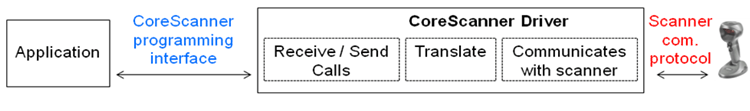
Figure 1: Software Developer FrameworkThe SDK can build an application with complete control of its scanner's capabilities.
Data, Barcode
Command and Control
Imaging
Remote Scanner Management
NOTE For a list of a scanner's supported attribute (parameter) numbers and definitions, refer to the Product Reference Guide for that model scanner, available from the Zebra Support website at http://www.zebra.com/support. Attributes include configuration parameters, monitored data, and asset tracking information.
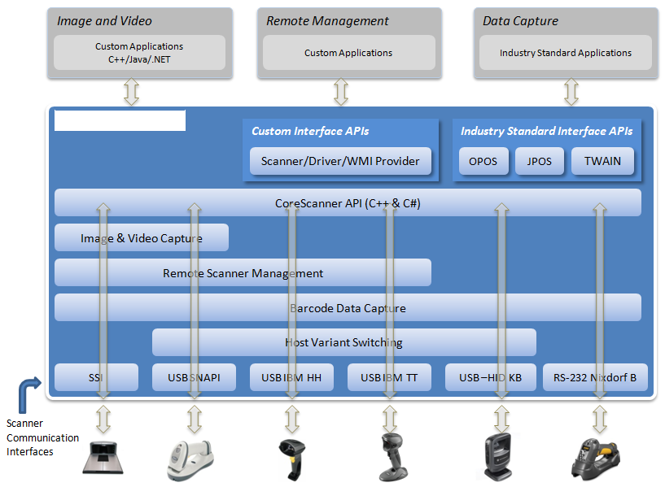
Figure 2: SDK ArchitectureYou can configure Zebra scanner devices to be operated in different host communication modes such as USB SNAPI, USB OPOS, USB HID Keyboard, USB IBM Table-top, SSI, and RS232 Nixdorf Mode B. Device feature support varies depending on communication mode but all modes support bar code scanning. Refer to the Product Reference Guide of a specific scanner for the bar codes to set its supported host communication modes.
Using the Zebra Scanner SDK, you can switch between supported host communication modes by calling the host variant switching command programmatically. This is useful when the device is in a less feature supportive mode and some advanced functionality is required but not supported by the current communication mode. The scanner can be switched to a feature rich mode and commands executed before switching the scanner back to the previous mode.
For example, you want to disable the UPC-A symbology but the device is in USB HID Keyboard mode. If the mode is supported by the scanner, you may switch to USB SNAPI or USB OPOS, set UPC- A to be disabled permanently and then switch the scanner back to USB HID Keyboard mode. See Table 1 below for more information.
Table 1 illustrates scanner capabilities supported by each communication mode. Refer to the specifications of a device for its ability to support of each communication mode.
Table 1: Scanner Device Communication Modes Vs. Capabilities
| Capabilities | USB SNAPI | USB OPOS | USB HID Keyboard | USB IBM Table-top | RS232 Nixdorf B | SSI |
|---|---|---|---|---|---|---|
| Data | Supported | Supported | Supported | Supported | Supported | Supported |
| Host Variant Switching | Supported | Supported | Supported | Supported | Not Available | Not Available |
| Management | Supported | Supported | Not Available | Supported | Not Available | Supported |
| Image & Video | Supported | Not Available | Not Available | Not Available | Not Available | Supported (Image Only) |
| Simulated HID Keyboard Output* | Supported | Supported | Not Available | Supported | Supported* | Supported |
| *Advanced Data Formatting (ADF) is not supported when using Simulated HID Keyboard Output. | ||||||
Simulated HID Keyboard Output is a feature enabling scanners in USB SNAPI, USB IBM Table-top, USB OPOS, or SSI mode to emulate HID Keyboard keystrokes to a host system for scanned data labels. It sends the content of the scanned data label as HID Keyboard keystrokes thus emulating USB HID Keyboard scanner mode.
The Zebra Scanner SDK supports multiple scanner devices to any application that runs on top of CoreScanner APIs. Each scanner device is shown to the user application by a unique scanner identification number. The scanner ID is a numeric value assigned to each connected device so there cannot be multiple scanner devices holding the same scanner ID.
Asset tracking information like model number, serial number, current firmware version and date of manufacture are available if the scanner and its current host mode support the management feature.
For example, in some modes like USB HID Keyboard, you do not see asset tracking information but the same scanner device shows you such information when it is in USB OPOS or USB SNAPI mode.
The format of device asset tracking information can follow different naming conventions for device model, serial number or current firmware version. For example, the length of a serial number for DS6707 and DS9808 scanners can be different.
The Zebra Scanner SDK supports multiple applications accessing multiple scanner devices connected to the host at the same time.
As described previously, a scanner ID uniquely identifies a connected scanner device to all applications. A scanner ID is consistent among all applications for one SDK instance. If the CoreScanner service or the host machine is restarted, a device may be assigned a different scanner ID but it is unique and referenced by all applications.
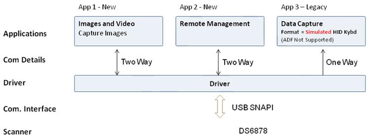
Figure 3: Three Applications Connected To One Scanner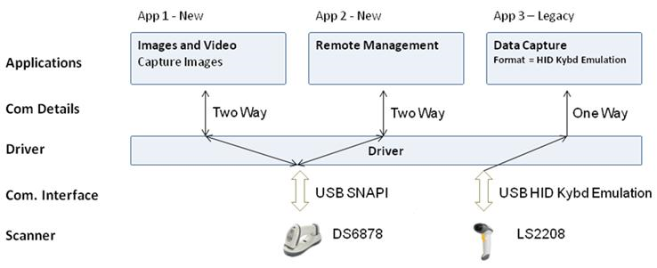
Figure 4: Three Applications Connected To Two Scanners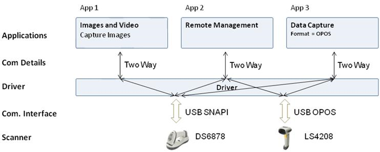
Figure 5: Many-to-Many Application Device Usage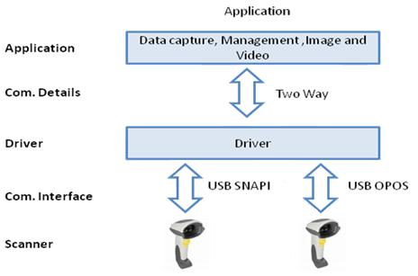
Figure 6: One Application Connected to Two ScannersFor example, a bar code event for a scanned label is shown below. The scanned data label arrives with a unique ScannerID and the scanner's model number and the serial number.
<outArgs>
<scannerID>1</scannerID>
<arg-xml>
<scandata>
<modelnumber>DS6707-SR20001ZZR</modelnumber>
<serialnumber>7114000503308</serialnumber>
<GUID>9008A01BB72BA34BB519806B63701AAA</GUID>
<datatype>11</datatype>
<datalabel>0x39 0x37 0x38 0x30 0x32 0x30 0x31 0x34</datalabel>
<rawdata>0x39 0x37 0x38 0x30 0x32 0x30 0x31 0x34</rawdata>
</scandata>
</arg-xml>
</outArgs>
For the compatible devices list, please visit following page.
https://www.zebra.com/us/en/support-downloads/software/developer-tools/scanner-sdk-for-windows.htmlThis chapter describes how to install Zebra Scanner SDK and its components on recommended platforms.
NOTE See System Requirements for supported platforms.
The SDK installation package includes support for:
This section covers installation and configuration instructions.
NOTE Uninstall any previous Zebra, Symbol or 3rd party drivers or SDKs installed on your system which communicate with Zebra Scanner Devices before installing the Zebra Scanner SDK. This includes but is not limited to Zebra and Symbol supplied OPOS, JPOS and SNAPI drivers.
NOTE For a list of a scanner's supported attribute (parameter) numbers and definitions, refer to the Product Reference Guide for that model scanner, available from the Zebra Support website at http://www.zebra.com/support. Attributes include configuration parameters, monitored data, and asset tracking information.
The SDK installation package includes following components.
OPOS Drivers
JPOS Drivers
Remote Management Components
Test & Sample utilities with Source code packages
The SDK installation package installs its components to the following default location: C:\Program Files\Zebra Technologies\Barcode Scanners\.
Table 2: Supported Operating Systems
| Zebra Scanner SDK Installation Package | |
|---|---|
| Microsoft® Windows 10 (32bit) | Zebra_Scanner_SDK_(32bit)_v3.xx.xxxx.exe |
| Microsoft® Windows 10 (64bit) | Zebra_Scanner_SDK_(64bit)_v3.xx.xxxx.exe |
Recommended minimum hardware requirement: x86 PC for 32-bit SDK, or x64 PC for 64-bit SDK with 512Mb RAM.
For an up-to-date table listing scanner models and their supported communication modes refer to the Scanner SDK for Windows website at: http://www.zebra.com/scannersdkforwindows.
Download the relevant Scanner SDK setup program for the 32-bit or 64-bit operating system on your PC from http://www.zebra.com/scannersdkforwindows.
There are two options for installing the Zebra Scanner SDK on a system.
If you install components such as OPOS, JPOS or WMI provider (remote management), the installer automatically installs sample programs and test utilities related to those components.
To download the appropriate OPOS, JPOS and WMI Developer’s Guides go to: http://www.zebra.com/scannersdkforwindows.
Execute the setup program. The installation process checks for CoreScanner drivers on the target machine. If the driver package is not present or outdated, clicking Install adds updated drivers before installing the scanner SDK package.
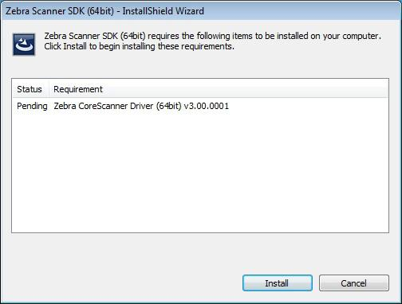
Figure 7: Prerequisite Check And InstallInstallation continues once the prerequisite drivers are installed on the machine.
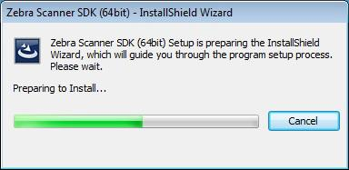
Figure 8: Install WindowClick Next on the Welcome screen.
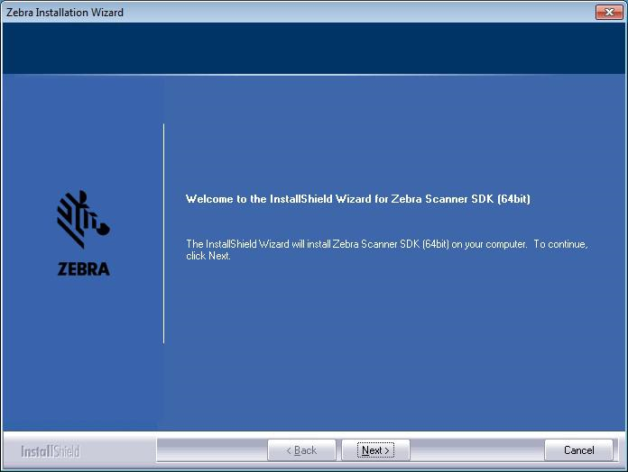
Figure 9: Welcome ScreenReview the license agreement and click Yes to accept.
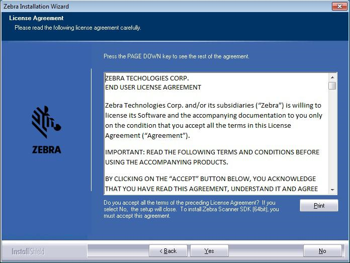
Figure 10: License AgreementSelect the Setup Type.
The user is prompted with two installation options:
The user can select the destination folder by clicking Browse and selecting the drive and folder in which to install the Zebra Scanner SDK. However, common components are placed in designated locations for consistency with other SDK users.
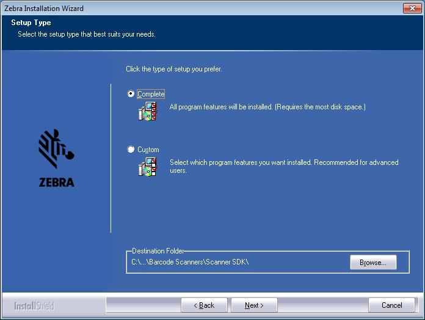
Figure 11: Setup TypeSelect features. The user is prompted to select features to be installed from the available components list.
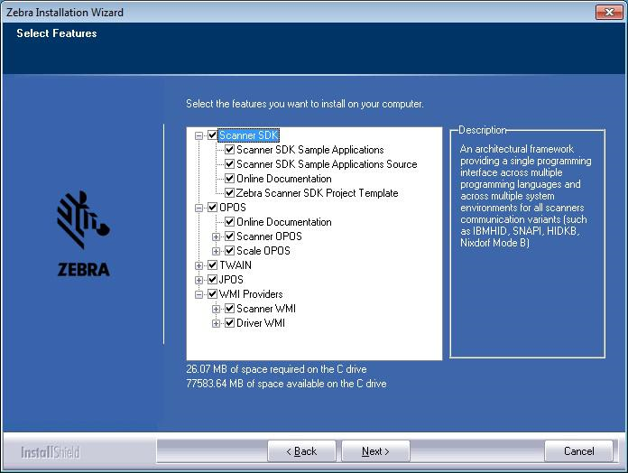
Figure 12: Select FeaturesNOTE Scanner SDK and USB imaging drivers are common components and are installed automatically.
Wait for the installation to complete.
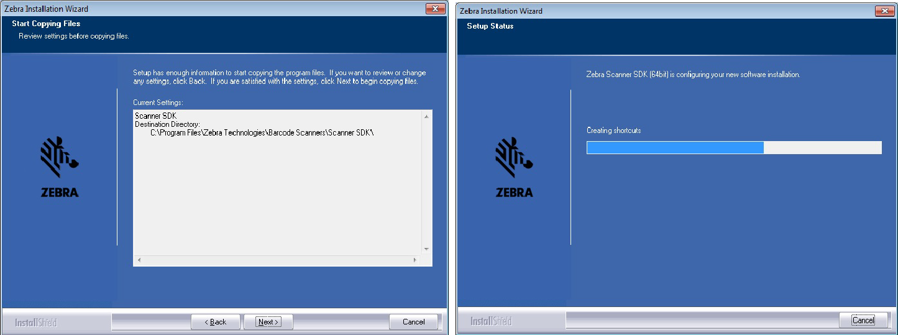
Figure 13: Installation ProgressInstallation complete.
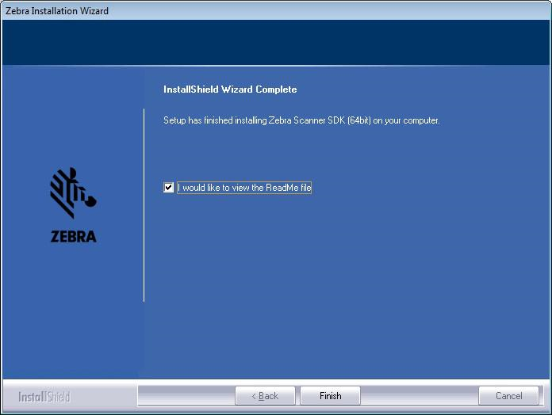
Figure 14: Installation CompleteThere are three Windows services installed with the CoreScanner driver in a default installation:
Table 3: Zebra Scanner SDK Components
| Component | Location |
|---|---|
| Common Components | %ProgramFiles%\Zebra Technologies\Barcode Scanners\Common |
| Scanner SDK | %ProgramFiles%\Zebra Technologies\Barcode Scanners\Scanner SDK |
| Scanner OPOS Driver | %ProgramFiles%\Zebra Technologies\Barcode Scanners\Scanner SDK\OPOS |
| Scanner JPOS Driver | %ProgramFiles%\Zebra Technologies\Barcode Scanners\Scanner SDK\JPOS |
| Scanner WMI Provider | %ProgramFiles%\%\ Zebra Technologies\Barcode Scanners\Scanner SDK\WMI Provider Scanner |
| Driver WMI Provider | %ProgramFiles%\Zebra Technologies\Barcode Scanners\Scanner SDK\WMI Provider Driver |
| TWAIN Driver | %WinDir%\twain_32\Zebra – On 32/64bit version %WinDir%\twain_64\Zebra – On 64bit version |
The Zebra Scanner SDK is capable of communicating with scanners connected to serial ports through Nixdorf Mode B, or SSI serial host mode. The SDK does not open any serial port without user consent to prevent other devices from being interfered with by Scanner SDK commands. Users can configure SDK usage of serial ports with entries in the <SERIAL_MODE_SETTINGS> section of the config.xml file located in %Program Files%\Zebra Technologies\Barcode Scanners\Common.
Serial mode setting entries indicate the serial com port number (PORT ID), the baud rate (BAUD) and the serial host mode (NAME) used to communicate with the attached scanner. The value of the name field can be NIXMODB, or SSI and the value of each of the three fields must be enclosed in quotation marks.
By default, the serial port settings in config.xml are commented out. To activate a serial mode setting, enter a line outside of the commented area, modify the settings appropriately, save the config.xml file and restart the CoreScanner service.
<SERIAL_MODE_SETTINGS>
<!-- Uncomment lines in this section to configure Serial Scanners -->
<!-- <PORT ID='5' BAUD='9600' NAME='NIXMODB'/> -->
<PORT ID='3' BAUD='9600' NAME='SSI'/>
</SERIAL_MODE_SETTINGS>
The Zebra Scanner SDK is capable of configuring a scanner to send simulated HID keyboard output (also known as HIDKB pump, or HIDKB emulation mode) while in USB SNAPI, USB IBM Hand-held, USB IBM Table-top, SSI, or RS-232 Nixdorf Mode B communication modes. This simulated HID keyboard output functionality can be configured by changing the XML elements in the simulated HID KB setting section of the config.xml file.
As of language locale, English, French and Italian languages are supported by the CoreScanner Driver.
Table 4: Config.xml File Elements
| Tag | Values | Description |
|---|---|---|
| <ENABLE> | 0, 1 | 0 - Disable (default) 1 - Enable |
| <LOCALE> | 0 - 3 |
0 - Generic Unicode Keyboard (default) 1 - French 2 - English 3 - Italian Default mode will setup the HIDKB from region and language. |
| <FUNCTION_KEY_MAPPING> | 0, 1 | When - 0 VK_RETURN transmitted as VK_CONTROL + M VK_TAB transmitted as VK_CONTROL + I VK_BACK transmitted as VK_CONTROL + H When - 1 VK_RETURN transmitted as VK_RETURN VK_TAB transmitted as VK_TAB VK_BACK transmitted as VK_BACK Refer to your scanner's Product Reference Guide for further information on function key mapping. |
| <INTER_KEY_DELAY> | 0, >0 | Character transmission delay interval in milliseconds. The default value of zero transmits keystrokes as they are decoded. If > 0, latency is introduced into key transmission so that any receiving application can adjust to the rate of transmission. |
| <KEY_CODE_SETTING>2 | 0 - 2 |
Define which key code type Simulated HID KB is configured. 0 - Virtual Keys only (default)1 - Scan Code only* 2 - Virtual Keys & Scan Code * This mode only transmits the scan codes. The system keyboard driver translates the scan codes into virtual-key codes. |
2 Features & options are available only in config file version 2.
<SIMULATED_HID_KB_SETTINGS>
<!-- Default=0, French=1, English=2, Italian=3 -->
<LOCALE>0</LOCALE>
<!-- Enabled=1, Disabled=0 -->
<ENABLE>0</ENABLE>
<FUNCTION_KEY_MAPPING>1</FUNCTION_KEY_MAPPING>
<INTER_KEY_DELAY>0</INTER_KEY_DELAY>
<ADF_PATH></ADF_PATH>
<!-- Virtual Key only =0, ScanCode only =1, Virtual Key & Scan Code =2-->
<KEY_CODE_SETTING>0</KEY_CODE_SETTING>
</SIMULATED_HID_KB_SETTINGS>
Notes
DDF enables the formatting of scanned bar code data with prefix and suffix labels through the CoreScanner driver and available from CoreScanner version 3.07.0037. DDF is available while the scanner is in USB SNAPI, USB IBM Hand-held, USB IBM Table-top, SSI, or RS-232 Nixdorf Mode B communication mode1. Unlike Advanced Data Formatting (ADF), DDF does not permit modifying the scanned bar code data itself with any rule-based method. The prefix/suffix labels are composed of one or more ASCII characters (1-255). There can be one or more prefix/suffix labels, and they are defined in the config.xml file in the section using the <DDFTAGDEF> tag. The DDF description is composed of a <DDFMETA> section, and a <DDFSELECT> section. The <DDFMETA> section defines the prefix/suffix labels used in DDF, and how they are combined in various ways to compose one or more DDF format definitions in the form of <DDFDEF> tags.
Following features are introduced along with DDF.
This Driver Data Formatting functionality can be configured by changing the XML elements in the section of the config.xml file located in %Program Files%\Zebra Technologies\Barcode Scanners\Common.
<DDF>
<DDFMETA>
<DDFTAGDEF>SUFFIX1.SUFFIX2.PREFIX1.ALT1</DDFTAGDEF>
<SUFFIX1>13.13</SUFFIX1>
<SUFFIX2>13.13</SUFFIX2>
<PREFIX1>13.13</PREFIX1>
<ALT1>91</ALT1>
<!-- Key value for ALT Sequence : ASCII value of Key that need to press with the ALT Key. (Support only for single key in v1) -->
<!-- ALT sequence only works as the first prefix. All other formats will be not supported in v1 -->
<DDFDEF DdfCode='0' DdfFormat='DATA'/>
<DDFDEF DdfCode='1' DdfFormat='ALT1.DATA.SUFFIX1'/>
<DDFDEF DdfCode='2' DdfFormat='DATA.SUFFIX2'/>
<DDFDEF DdfCode='3' DdfFormat='DATA.SUFFIX1.SUFFIX2'/>
<DDFDEF DdfCode='4' DdfFormat='PREFIX1.DATA'/>
<DDFDEF DdfCode='5' DdfFormat='PREFIX1.DATA.SUFFIX1'/>
<DDFDEF DdfCode='6' DdfFormat='PREFIX1.DATA.SUFFIX2'/>
<DDFDEF DdfCode='7' DdfFormat='PREFIX1.DATA.SUFFIX1.SUFFIX2'/>
</DDFMETA>
<DDFSELECT>0</DDFSELECT>
</DDF>
Four DDF prefix/suffix/ALT labels are defined as: SUFFIX1, SUFFIX2, PREFIX1, and ALT1. The values in these tags are delimited by a '.' character in the XML. Each of these labels is defined as shown below with the decimal ASCII character sequence that they represent:
SUFFIX1 = ascii(13), ascii(10) = CR, LFFormats are also delimited by a '.' character in the XML. There can be one or more format definitions that use the above defined labels.
This format definition is identified by the keyword DDFCode and the format is represented by the keyword DDFFormat. Note that "DATA" is an intrinsic that means "Insert the Scanned Bar Code Here". The format definition to be executed is based on DDFCode and is specified in the <DDFSELECT> tag.
<DDFDEF DDFCode='6' DDFFormat='PREFIX1.DATA.SUFFIX2' />The XML clause above would transmit the bar code data as:
%&BarcodeData#$The XML clause above would transmit the bar code data as:
ALT+[ BarcodeData #$You can perform a basic inspection on your system process list to verify a successful installation of the Zebra Scanner SDK.
NOTE This is simple verification of the operation of the Zebra Scanner SDK. See How to Verify Scanner SDK Functionality on page 4-7 for more advanced SDK testing.
The following instructions guide you through a simple check of the Scanner SDK's operation.
Right click on the Windows Task Bar and select Task Manager.
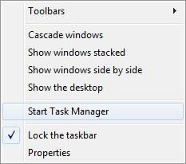
Figure 15: Task Bar Selection of Task ManagerUnder the Processes tab, find the CoreScanner.exe in the Image Name list under.
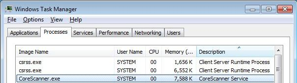
Figure 16: CoreScanner.exe on Task ManagerThe CoreScanner driver and the Scanner SDK require the Microsoft 2019 C++ Redistributable Package which automatically installs if it is does not already exist on the host PC. For an unattended installation, a complication arises if the 2019 C++ Redistributable is not pre-installed. By default, Microsoft triggers a reboot of the PC after the C++ Redistributable installation. In this case, a reboot is injected into the overall silent install process (which may then also require a login).
To avoid the interruption, the 2019 C++ Redistributable can be downloaded from Microsoft and pre- installed silently while suppressing the reboot using the command line switches /install /quiet /norestart. This delays the required reboot, and allows a custom silent CoreScanner and Scanner SDK install to be performed using a subsequent command.
The Visual C++ Redistributable for Visual Studio 2019 can be downloaded from the Microsoft website. The appropriate file vcredist_x86.exe (32-bit version) or vcredist_x64.exe (64-bit version) must be selected and downloaded.
The command line to perform its install silently without reboot is:
vcredist_x86.exe /install /quiet /norestart
or,
vcredist_x64.exe /install /quiet /norestart
The required reboot must be performed at the end of the overall installation process to ensure correct operation.
The Zebra Scanner SDK, including the underlying CoreScanner driver, is packaged using the Flexera InstallShield installer program. SDK components can be selectively installed using the SDK Custom Installation option. In conjunction with this custom install option, the installer program supports command line switches to record custom responses that can be used to create a silent install response file. These response files, ending in the extension .iss, may then be used to perform a silent installation of the CoreScanner driver and Scanner SDK components on production PCs.
The Silent Install command line options are listed in the following table.
Table 5: Silent Install Command Line Options
| Command Line Switch | Description |
|---|---|
| -s | Silent mode. The -s switch runs the installation in silent mode using the responses contained in a recorded response file. |
| -r | Record mode. The -r switch displays all the setup dialogs and records the chosen responses in the file specified with the -f1 switch described below. |
| -f1 | Specify custom response file name and path. The -f1 switch specifies where the response file is located for the -s switch, or where it should be created when using the -r switch. Specify an absolute path; using a relative path yields unpredictable results. |
| -f2 | Specify alternative log file name and path. When running an installation in silent mode (using the -s switch), the log file is created by default in the same directory and with the same name (except for the extension) as the response file. The -f2 switch enables you to specify an alternative log file location and file name. Specify an absolute path; using a relative path yields unpredictable results. |
When executed from a command prompt, the example below uses the -r and -f1 switches to record your responses to the setup prompts into a custom response file:
“Scanner_SDK_(32bit)_v2.0x.00xx.exe" -r -f1"c:\path\customsetup.iss"The responses chosen using the command above are saved in the specified response file and can then be used as input to silently install the SDK with those chosen responses on production PCs.
The next example shows how the -s switch uses the response file created with the previous command to perform the silent install:
"Scanner_SDK_(32bit)_v2.0x.00xx.exe" -s -f1"c:\path\customsetup.iss"Note that there is no space between the -f1 switch and first quotation mark for the custom response file.
If necessary, the -r switch option can also be used to record a custom response file for a silent removal of the SDK by running the command on a PC that has the SDK already installed.
IMPORTANT The CoreScanner drivers are required for any SDK component so the CoreScanner services are installed, and must be running to provide functionality.
This chapter provides information about testing and evaluation of the Zebra Scanner SDK's software components using the test utilities provided in the SDK.
NOTE For the attributes (parameters) applicable to a specific scanner, refer to the Product Reference Guide . Product Reference Guides may also contain an appendix listing the generic non-parameter attributes supported on most Zebra scanners.
The Zebra Scanner SDK includes the following test utilities:
Each test utility demonstrates the main functionalities of the SDK. You can gain an understanding of the Zebra Scanner SDK using these test utilities. This section also describes how to use the test utilities' functionality.
NOTE You may need to install the Microsoft®.Net Framework v2.0 or later to execute C# .Net Sample application. If so, Microsoft detects and informs the user of this requirement.
The Zebra Scanner SDK Test Utilities support the following functionality:
The Scanner SDK C++ Sample Application enables you to simulate an application that communicates with the Scanner SDK. The utility demonstrates the functionality of the SDK. It includes C++ source code and its solution and project files for further reference.
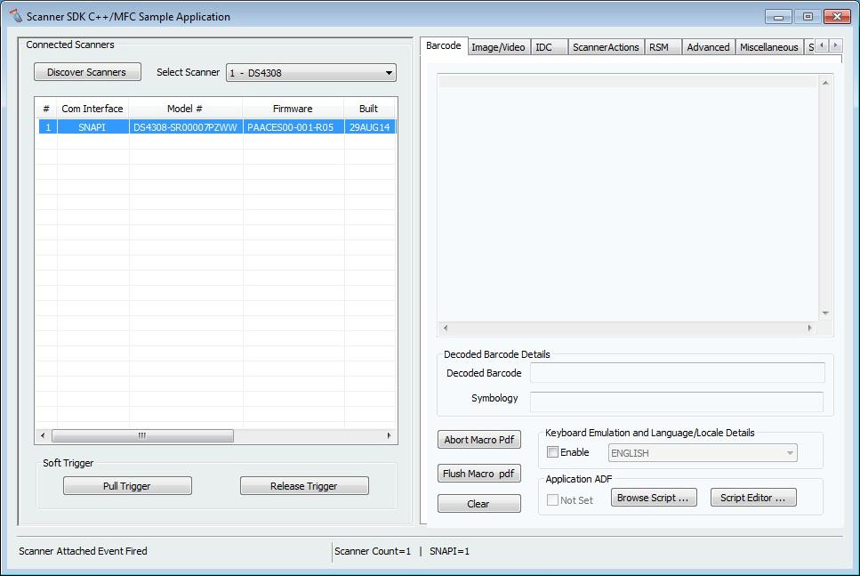
Figure 17: C++ Sample ApplicationThe Scanner SDK C#.Net Sample Application enables you to simulate an application that communicates with the Scanner SDK. The utility demonstrates the functionality of the SDK. It includes C#.Net source code and its solution and project files for further reference.
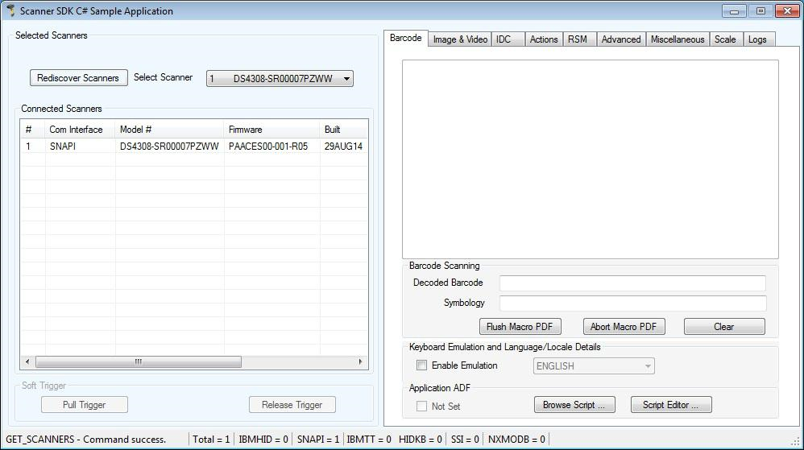
Figure 18: C#.Net Sample ApplicationTable 6: Test Utility Buttons and Fields by Tab Screen
| Button for Field | Description |
|---|---|
| Discover Scanners | Invokes Open, GetScanners methods and register for all the events. |
| Select Scanner | Select the scanner you want to invoke the command |
| Connected Scanners | List all the connected scanners regardless of the mode |
| Pull Trigger | Soft Pull Trigger the scanner for Bar code, Image and Video actions |
| Release Trigger | Soft Release Trigger the scanner for Bar code, Image and Video actions |
| Bar Code Tab | |
| Flush Macro PDF | Flush Macro PDF bar code buffer |
| Abort Macro PDF | Abort Macro PDF continues read |
| Clear | Clear the Bar code data area |
| Decoded Bar Code | Display label value of the scanned bar code |
| Symbology | Display the symbology of scanned bar code |
| Enable Emulation | Enable Simulated HID Keyboard Output |
| Image/Video Tab | |
| Image | Invoke image capture mode |
| Video | Invoke video capture mode |
| Abort Transfer | Abort Image Transfer on serial scanners |
| Image Type | Select JPG, TIFF or BMP image type |
| Enable Video View Finder | Enable the view finder in image mode |
| Save Image | Save the captured image |
| IDC Tab | |
| Get | Display value of the IDC-related parameter in the drop down menu |
| Set | Temporarily set the value of the IDC-related parameter in the drop down menu |
| Store | Permanently store the value of the IDC-related parameter in the drop down menu |
| Value | Field to display, and enter an IDC-related parameter value |
| Decode Data | Value of linked or anchor bar code data |
| Symbology | Symbology of linked or anchor bar code |
| Use HID | Specify HID channel for data transmission (instead of the default BULK channel) |
| Clear | Clears all the fields |
| Scanner Actions Tab | |
| Enable/Disable Scanner | Enable/Disable the scanner for data/image/video capture initiation |
| Aim | Switch on and off Aim control of the scanner |
| Beeper | Beep the peeper of the scanner |
| Reboot Scanner | Reboot the scanner |
| LED | Light the LED(s) on the scanner |
| Switch Host Variant | Switch the scanner host type from current type to desired type; the user has the option to select silent feature and variant change persistent and non-persistent. |
| RSM Tab | |
| Get All IDs | Get all supported attribute IDs from the selected scanner |
| Get Value | Select one or more attribute IDs and get the value for them |
| Next Value | Get the next attributes value given the current attribute number |
| Store Value | Store value(s) for selected attribute(s) |
| Set Value | Set value(s) for selected attribute(s) |
| Select All | Select all the attribute IDs at the RSM data viewer |
| Clear All | Clear all the attribute data at the RSM data viewer |
| Clear All Values | Clear all the attribute values at the RSM data viewer (C# only) |
| Clear Value | Clear a selected attribute value at the RSM data viewer (C# only) |
| Advanced Tab | |
| Firmware Update Options | Updated firmware and launch the new firmware on the scanner |
| Browse | Browse the Firmware file (*.DAT) or Plug-in file (*.SCNPLG) |
| Update | Initiate firmware update process |
| Abort | If you want to abort firmware update process |
| Launch | Once firmware update finishes launch the new firmware in the scanner |
| Claim Scanner | Exclusively claim and declaim the scanner for this application |
| Miscellaneous Tab | |
| SDK Version | Get the scanner SDK version |
| Get Device Topology | Get the scanner device topology, this is useful to get an idea of scanner topology for cascaded scanners |
| Serial Interface Settings | Serial interface settings for serial scanners |
| Scale Tab | |
| Read Weight | Read the weight of the item on the scale |
| Zero Scale | Zero the scale |
| Reset Scale | Reset the scale |
| Weight Measured | Weight of the item (Pounds or Kilograms) |
| Weight Unit | Weight mode of the scale (English or Metric) |
| Logs Tab | |
| Event Log | Command and event log, logs commands initiated |
| XML Log | Displays Output of each function if an output exists |
| Clear Event Log | Clear command and event log area |
| Clear XML Log | Clear XML log area |
NOTE The SDK Sample Application in the latest release of the Scanner SDK for Windows implements a ScanToConnect tab. The ScanToConnect feature enables a Zebra cordless Bluetooth scanner to pair directly to a PC/tablet by scanning an on-screen bar code, replacing the need for a paper pairing label. This paperless pairing solution wirelessly connects the scanner directly to the host, without the need for a cradle.
NOTE Sample source code for the ScanToConnect tab is included with installation of the SDK Sample Application. For further information on this functionality, contact the Zebra Technologies Global Customer Support Center at: www.zebra.com/support
This section guides you through a series of use cases and test cases of the Zebra Scanner SDK and its functionality.
See Basic Installation Verification for more information
Connect a Zebra USB scanner(s) to the computer and put the scanner into USB OPOS (Hand Held) or USB SNAPI mode by scanning one of the bar codes below.
Launch the Zebra Scanner SDK Sample Utility by selecting Start > All Programs > Zebra Scanner > Scanner SDK > Scanner SDK Sample Application (C++)"or Scanner SDK Sample Application (C#.Net).
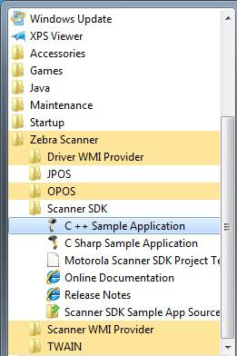
Figure 19: Start Scanner SDK Sample Application (C++) or C# .NetClicking Discover Scanners in the sample application executes an Open for all types of scanners and an ExecCommand with the REGISTER_FOR_EVENTS method using the following XML and a GetScanners API call:
<inArgs>
<cmdArgs>
<arg-int>6</arg-int>
<arg-int>1,2,4,8,16,32</arg-int>
</cmdArgs>
</inArgs>
NOTE The first <inArgs> tag in the XML is filled with the number of events you want to register. In the example above, number of event it wants to register is "6". The second
Table 7: Supported Event IDs
| Event Name | Event ID |
|---|---|
| SUBSCRIBE_BARCODE | 1 |
| SUBSCRIBE_IMAGE | 2 |
| SUBSCRIBE_VIDEO | 4 |
| SUBSCRIBE_RMD | 8 |
| SUBSCRIBE_PNP | 16 |
| SUBSCRIBE_OTHER | 32 |
The GetScanners API call produces XML code as follows:
<?xml version="1.0" encoding="UTF-8" ?>
<scanners>
<scanner type="SNAPI">
<scannerID>1</scannerID>
<serialnumber>7116000501003</serialnumber>
<GUID>A2E647DED2163545B18BCEBD0A2A133D</GUID>
<VID>1504</VID>
<PID>6400</PID>
<modelnumber>DS670-SR20001ZZR</modelnumber>
<DoM>27APR07</DoM>
<firmware>NBRPUAAC</firmware>
</scanner>
</scanners>
Table 8: Data Representation of the GetScanners Output in this Example
| Scanner Information | Value | Description |
|---|---|---|
| Scanner ID | 1 | A unique ID assigned for a scanner from the SDK; any scanner specific method execute from ExecCommand should point to a scanner ID |
| Serial Number | 7116000501003 | Device serial number printed on the label |
| Model Number | DS670-SR20001ZZR | Device model number |
| Date of Manufacture | 27APR07 | Device date of manufacture |
| Firmware Version | NBRPUAAC | Current firmware version |
| H/W GUID | A2E647DED2163545B18BCEBD0A2A133D | Hardware unique ID |
The XML consists of the scanner type, scanner ID, serial number, GUID, VID, PID, model number, date of manufacture and firmware version of the connected scanners.
All discovered scanners are presented in the Connected Scanners window by processing the XML received from the GetScanners command along with their asset tracking information returned by querying device parameters. The detection of scanners indicates the SDK was installed successfully. Click Discover Scanners to display the connected scanners.
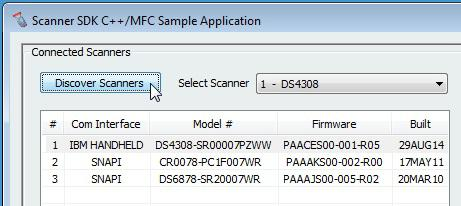
Figure 20: Connected ScannersThis document provides detailed instructions for generating a “Scan to Connect” parameter barcode, which is used to directly connect Bluetooth scanners to the host.
Before proceeding, ensure you have the following:
Install CoreScanner Service
Ensure that the CoreScanner Service is properly installed on your host machine. This service is required to communicate with the scanner and execute necessary commands.
Verify Bluetooth Radio Module
Ensure your host has an operational Bluetooth radio module. This module can be either inbuilt or an external one connected to your host.
Execute OPEN API of CoreScanner
To begin, you need to execute the OPEN API of the CoreScanner. This will initialize the communication with the CoreScanner service.
Execute API to Register for Events
After successfully opening the CoreScanner, the next step is to register for events. This is done by calling the EXEC API with a specific command to subscribe to the desired events.
Send ExecCommand to Generate Bluetooth Parameter Barcode
After successfully opening the CoreScanner, send an ExecCommand to generate the Bluetooth parameter barcode.
Here is an example of how to execute the ExecCommand in C#:
private void GetPairingBarcode()
{
// Check the selection from the drop down is slected.
if (cmbScannerType.SelectedItem != null && cmbProtocol.SelectedItem != null && cmbHostName.SelectedItem != null)
{
/*
//-- Enums for defaultOptions -- //
[Description("No Defaults")]
NoDefaults = 0,
[Description("Set Factory Defaults")]
SetFactoryDefaults = 1,
[Description("Restore Factory Defaults")]
RestoreFactoryDefaults = 2
*/
Constants.DefaultOption defaultOption = GetSelectedDefaultOptionID(cmbDefaultOption.SelectedIndex);
/*
//-- Enums for imageSize -- //
[Description("Small")]
Small = 1,
[Description("Medium")]
Medium = 2,
[Description("Large")]
Large = 3
*/
Constants.ImageSize imageSize = GetSelectedImageSizeID(cmbImageSize.SelectedIndex);
/*
//-- Enums for scannerType -- //
[Description("Legacy")]
Legacy = 0,
[Description("New")]
New = 1
*/
Constants.ScannerType scannerType = GetSelectedScannerTypeID(cmbScannerType.SelectedIndex);
/*
//-- Enums for protocol -- //
[Description("Simple Serial Interface (SSI)")]
SSI = 1,
[Description("Serial Port Profile(SPP)")]
SPP = 14,
[Description("Human Interface Device(HID)")]
HID = 17
*/
Constants.ProtocolName protocol = GetSelectedProtocolID(cmbProtocol.SelectedIndex);
/*
//-- Enums for host -- //
[Description("SSI BT Classic (Non-Discoverable)")]
SSIBTClassic = 22
*/
Constants.HostName host = GetSelectedHostID(cmbHostName.SelectedIndex);
int iProtocol = (int)protocol;
int iDefaultOption = (int)defaultOption;
int iImagesize = (int)imageSize;
//Logic for protocol SSI and scanner
if (scannerType == Constants.ScannerType.New && protocol == Constants.ProtocolName.SSI)
{
iProtocol = (int)host;
}
int status = STATUS_FALSE; //This will hold the status of the Exec API. if Success returns '0', else it's an error.
string outXml = "";
string inXml = "";
int NoOfParameters = 3; //This is the number of parameters that we send throgh the inXml.
string parameters = string.Join(",", iProtocol, iDefaultOption, iImagesize);
inXml = scanToConnect.GenerateInitXML(NoOfParameters, parameters);
/*
// -- Example of inXml with above parameters.
"<inArgs>"
+ " <cmdArgs>"
+ "<arg-int>" + NoOfParameters + "</arg-int>"
+ "<arg-int>" + Parameters + "</arg-int>"
+ " </cmdArgs>"
+ "</inArgs>"
*/
ExecCmd(Constants.GetPairingBarcode, ref inXml, out outXml, out status); //Constants.GetPairingBarcode = 1005
DisplayResult(status, "GET_PAIRING_BARCODE");
}
}
Receive Scan to Connect Barcode Image.
If the ExecCommand in step 5 returns a success status, the pairing barcode will be received as an image in the parameter barcode event.
You need to handle the event where the pairing barcode image is received. Here is an example event handler in C#:
private void OnParameterBarcodeEvent(short eventType, int size, short imageFormat, ref object sfImageData, ref string pData)
{
if (eventType == 1) //Pairing Barcode event type would be '1'
{
Image img = BaseMethods.ProcessImageData(sfImageData);
if (picBBarcode.Width < img.Width)
{
picBBarcode.SizeMode = PictureBoxSizeMode.StretchImage;
}
else
{
picBBarcode.SizeMode = PictureBoxSizeMode.CenterImage;
}
picBBarcode.Image = img;
if (picBBarcode.Image != null)
{
btnSaveBarcode.Enabled = true;
//Image saving method
}
UpdateResults("ParameterBarcode Event fired");
}
}
/// <summary>
/// Process the Image object data to Image
/// </summary>
/// <param name="ImageData">object that contains raw image data</param>
/// <returns>Formatted Image</returns>
public static Image ProcessImageData(object ImageData)
{
try
{
Array arr = (Array)ImageData;
long len = arr.LongLength;
byte[] byImage = new byte[len];
arr.CopyTo(byImage, 0);
MemoryStream ms = new MemoryStream();
ms.Write(byImage, 0, byImage.Length);
Image img = Image.FromStream(ms);
return img;
}
catch (Exception ex)
{
throw ex;
}
}
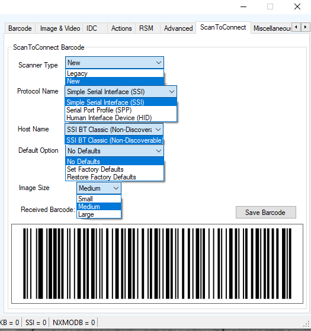
Figure 21: Sample App UI of the selection and the Scan-to-Connect Barcode ImageScan a bar code and its decoded data is returned in the form of XML data and displayed on the Barcode tab. To illustrate the typical implementation, the sample application also displays only the "Bar code" data below the XML data.
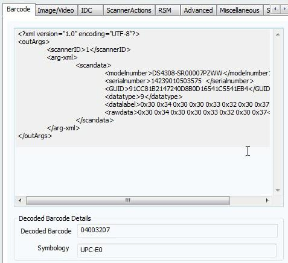
Figure 22: Decoded Bar Code DataScan the following sample bar code after discovering the scanner in the sample application (see Scanner Discovery / Asset Tracking Information / Validating Successful SDK Installation).
The following XML is returned:
<?xml version="1.0" encoding="UTF-8" ?>
<outArgs>
<scannerID>2</scannerID>
<arg-xml>
<scandata>
<modelnumber>DS670-SR20001ZZR</modelnumber>
<serialnumber>7116000501003</serialnumber>
<GUID>A2E647DED2163545B18BCEBD0A2A133D</GUID>
<datatype>8</datatype>
<datalabel>0x30 0x31 0x32 0x33 0x34 0x35 0x36 0x37 0x38 0x39 0x31 0x32</datalabel>
<rawdata>0x30 0x31 0x32 0x33 0x34 0x35 0x36 0x37 0x38 0x39 0x31 0x32</rawdata>
</scandata>
</arg-xml>
</outArgs>
Select the language locale from the drop down menu.
The sample application first retrieves the current config.xml file (see Simulated HID Keyboard Configuration) by executing an ExecCommand API call with the KEYBOARD_EMULATOR_GET_CONFIG method and an empty inXML. It receives outXML as shown below:
inXML:
<inArgs></inArgs>
outXML:
<outArgs>
<arg-xml>
<KeyEnumState>1</KeyEnumState>
<KeyEnumLocale>0</KeyEnumLocale>
</arg-xml>
</outArgs>
The sample application processes the XML above and populates the user interface. The <KeyEnumState> tag indicates the current state of Simulated HID Keyboard Output, where enabled = 1 and disabled = 0. The <KeyEnumLocale> tag indicates the language locale number currently active with the CoreScanner service. The value of "0" above indicates English.
Use the ExecCommand API call with the KEYBOARD_EMULATOR_ENABLE method and following inXML to enable/disable Simulated HID Keyboard Output.
<inArgs>
<cmdArgs>
<arg-bool>TRUE</arg-bool>
</cmdArgs>
</inArgs>
To enable HID KB Emulator use "TRUE" in <arg-bool> tags and "FALSE" to disable it.
<inArgs>
<cmdArgs>
<arg-int>1</arg-int>
</cmdArgs>
</inArgs>
Use the ExecCommand API call with the KEYBOARD_EMULATOR_SET_LOCALE method and following inXML to change the language locale.
Set the <KeyEnumLocale> tag value to "1" for French and "0" for English.
Select a "SNAPI" mode scanner ID from the Select Scanner drop-down box. Your selection is then reflected in the Connected Scanners window.
NOTE If no SNAPI scanner is shown in the Connected Scanners window, you must connect an imaging scanner that supports image/video transfer. For an up-to-date table listing scanner models and their supported communication modes refer to the Scanner SDK for Windows website at: www.zebra.com/scannersdkforwindows
Alternatively, select "SNAPI" mode scanner in the Connected Scanners area. Your selected Scanner's ID is displayed in the Select Scanner drop-down combo box.
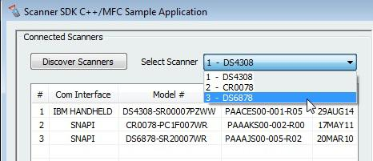
Figure 23: Scanner SelectionSelecting the image type in the sample application executes an ExecCommand API call using the DEVICE_SET_PARAMETERS method and following XML code:
<inArgs>
<scannerID>1</scannerID>
<cmdArgs>
<arg-xml>
<attrib_list>
<attribute>
<id>304</id>
<datatype>B</datatype>
<value>4</value>
</attribute>
</attrib_list>
</arg-xml>
</cmdArgs>
</inArgs>
NOTE The <scannerID> tag in the XML is filled with the scanner’s ID selected in the Connected Scanners list of the sample application. The <id> tag contains the image file type parameter of the selected scanner. In the XML example above, this value is 304. The value 4 indicates the image type the user should get from the scanner. See the following table for valid Image Types.
Table 9: Image Types
| Image Type | Value |
|---|---|
| BMP_FILE_SELECTION | 3 |
| TIFF_FILE_SELECTION | 4 |
| JPEG_FILE_SELECTION | 1 |
NOTE These values may change with the scanner model. Refer to the scanner Product Reference Guide for more information on scanner parameters. For more information about parameter settings, see Parameter Setting (Device Configuration) on page 4-21
Checking Enable Video View Finder in the sample application executes an ExecCommand API call with the DEVICE_SET_PARAMETERS method and following XML code:
<inArgs>
<scannerID>1</scannerID>
<cmdArgs>
<arg-xml>
<attrib_list>
<attribute>
<id>324</id>
<datatype>B</datatype>
<value>1</value>
</attribute>
</attrib_list>
</arg-xml>
</cmdArgs>
</inArgs>
NOTE The <scannerID> tag in the XML contains the selected scanner’s ID from the Connected Scanners list of the sample application. The <id> tag contains the video view finder parameter number of the scanner and value 1 indicates that the view finder is enabled. A value “0” indicates the view finder is disabled.
Click Image in the sample application. Image executes an ExecCommand API call using the DEVICE_CAPTURE_IMAGE method with the XML code below. Click Video to execute an ExecCommand API call using the DEVICE_CAPTURE_VIDEO method with the following XML code.
<inArgs>
<scannerID>1</scannerID>
</inArgs>
Clicking Pull Trigger or Release Trigger in the sample application executes an ExecCommand API call using the corresponding DEVICE_PULL_TRIGGER or DEVICE_RELEASE_TRIGGER method with the following XML code
<inArgs>
<scannerID>1</scannerID>
</inArgs>
NOTE You can use the trigger on the scanner to start and stop image or video capture instead of the soft trigger buttons provided in the sample utility.
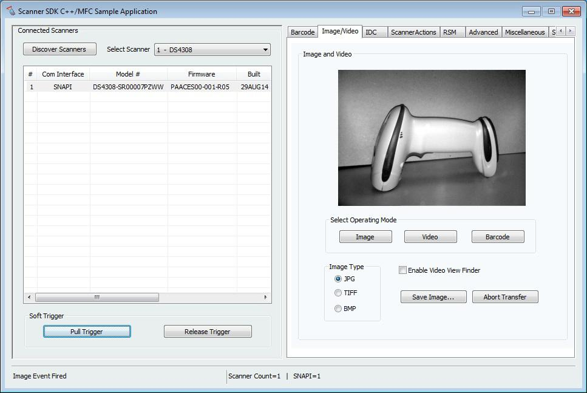
Figure 24: Captured Image Displayed on the Image & Video TabZebra scanners are capable of sounding the beeper by invoking the Beeper method from the host system.
Select the desired beep sequence from the list defined on the Scanner Actions tab as shown below.
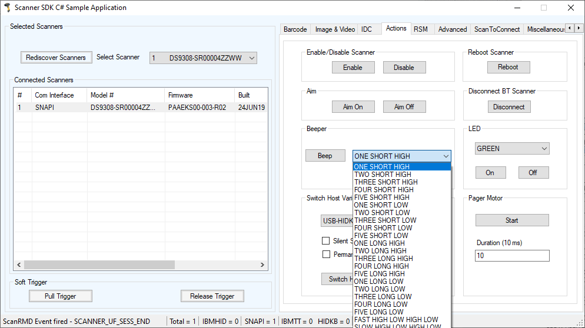
Figure 25: Beep ValuesClicking Beep in the sample application executes an ExecCommand API call with the SET_ACTION method and following XML code:
<inArgs>
<scannerID>1</scannerID>
<cmdArgs>
<arg-int>2</arg-int>
</cmdArgs>
</inArgs>
NOTE The <scannerID> tag in the XML is filled with the scanner's ID selected in the Connected Scanners list of the sample application. The <arg-int> tag in the XML is filled with the beep's ID selected in the Beeper drop-down list shown in Figure 24.
Zebra scanners are capable of flashing an LED by initiating the flash LED method from the host system.
Select the desired LED from the list, defined on the Scanner Actions tab
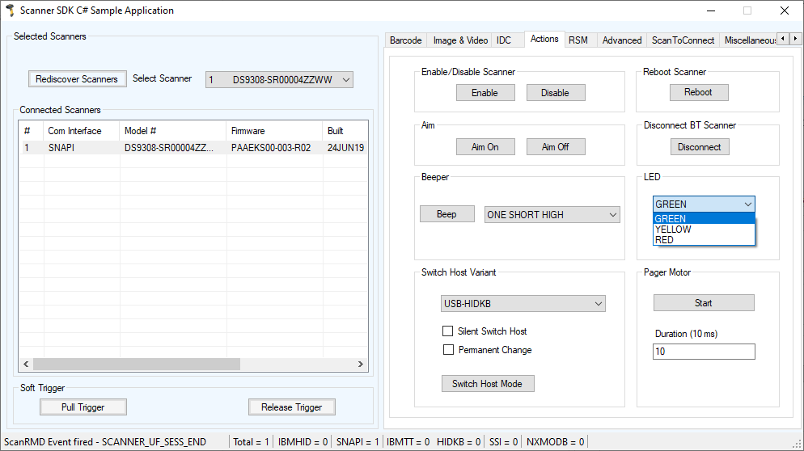
Figure 26: LED SelectionClicking On in the sample application executes an ExecCommand API call with the SET_ACTION method and the following XML code:
<inArgs>
<scannerID>1</scannerID>
<cmdArgs>
<arg-int>43</arg-int>
</cmdArgs>
</inArgs>
NOTE The <scannerID> tag in the XML is filled with the scanner ID selected in the Connected Scanners list of the sample application. The
NOTEThe Beep the Beeper and Flash the LED XML code examples are the same. The only difference between these commands is the method name. All XML used in an ExecCommand API call has a common format. The </inArgs> tag always contains the <scannerID> tag and optionally contains <cmdArgs> tags and <arg-xml> tags inside the </inArgs> tag. Inside <cmdArgs>, there can be <arg-string>,<arg-bool> and <arg-int> tags. You can execute different commands for the same XML by changing the method parameter in ExecCommand.
To query parameters from a specific device, such as the Date of Manufacture and Firmware Version, use the following procedure.
Click Get All IDs to retrieve the entire list of supported attribute IDs of the selected scanner. This operation executes an ExecCommand API call with the ATTR_GETALL method and the following XML:
<inArgs>
<scannerID>1</scannerID>
</inArgs>
NOTE The <scannerID> tag in the XML contains the scanner's ID selected in the Connected Scanners list of the sample application.
The sample application receives the XML output below and displays the corresponding attribute IDs on the grid (see Figure 29).
<?xml version="1.0" encoding="UTF-8" ?>
<outArgs>
<scannerID>1</scannerID>
<arg-xml>
<modelnumber>DS670-SR20001ZZR</modelnumber>
<serialnumber>7116000501003</serialnumber>
<GUID>A2E647DED2163545B18BCEBD0A2A133D</GUID>
<response>
<opcode>5000</opcode>
<attrib_list>
<attribute name="">0</attribute>
<attribute name="">1</attribute>
<attribute name="">2</attribute>
<attribute name="">3</attribute>
<attribute name="">4</attribute>
<attribute name="">5</attribute>
<attribute name="">6</attribute>
<attribute name="">7</attribute>
<attribute name="">8</attribute>
<attribute name="">9</attribute>
<attribute name="">10</attribute>
<attribute name="">11</attribute>
<attribute name="">12</attribute>
<attribute name="">13</attribute>
<attribute name="">14</attribute>
<attribute name="">15</attribute>
<attribute name="">16</attribute>
<attribute name="">17</attribute>
<attribute name="">18</attribute>
<attribute name="">20</attribute>
<attribute name="">21</attribute>
<attribute name="">22</attribute>
<attribute name="">23</attribute>
<attribute name="">24</attribute>
<attribute name="">25</attribute>
<attribute name="">26</attribute>
<attribute name="">27</attribute>
<attribute name="">28</attribute>
<attribute name="">29</attribute>
<attribute name="">30</attribute>
<attribute name="">31</attribute>
<attribute name="">34</attribute>
<attribute name="">35</attribute>
<attribute name="">36</attribute>
<attribute name="">37</attribute>
<attribute name="">38</attribute>
<attribute name="">39</attribute>
<attribute name="">655</attribute>
<attribute name="">656</attribute>
<attribute name="">657</attribute>
<attribute name="">658</attribute>
<attribute name="">659</attribute>
<attribute name="">665</attribute>
<attribute name="">670</attribute>
<attribute name="">672</attribute>
<attribute name="">673</attribute>
<attribute name="">705</attribute>
<attribute name="">716</attribute>
<attribute name="">718</attribute>
<attribute name="">721</attribute>
<attribute name="">724</attribute>
<attribute name="">726</attribute>
<attribute name="">727</attribute>
<attribute name="">728</attribute>
<attribute name="">730</attribute>
<attribute name="">731</attribute>
<attribute name="">734</attribute>
<attribute name="">735</attribute>
<attribute name="">745</attribute>
<attribute name="">6000</attribute>
<attribute name="">6001</attribute>
<attribute name="">6002</attribute>
<attribute name="">6003</attribute>
<attribute name="">6004</attribute>
<attribute name="">20004</attribute>
<attribute name="">20006</attribute>
<attribute name="">20007</attribute>
<attribute name="">20008</attribute>
<attribute name="">20009</attribute>
<attribute name="">20010</attribute>
<attribute name="">20011</attribute>
<attribute name="">20013</attribute>
</attrib_list>
</response>
</arg-xml>
</outArgs>
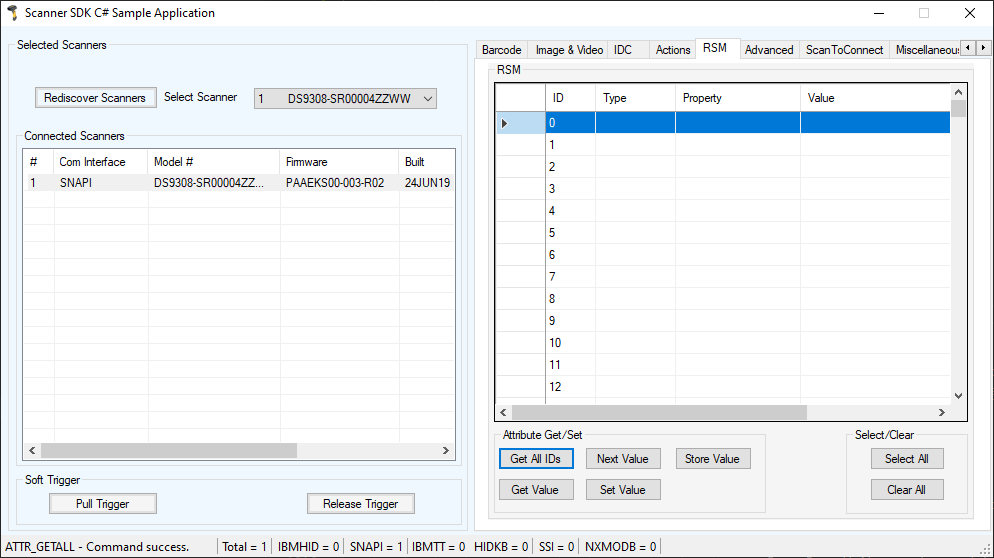
Figure 27: Get RSM IDsTo query attributes, select attribute IDs and click Get Value to view the attribute values. This operation executes an ExecCommand API call with the ATTR_GET method and the following XML.
<inArgs>
<cmdArgs>
<scannerID>1</scannerID>
<arg-xml>
<attrib_list>535,20004,1,140,392</attrib_list>
</arg-xml>
</cmdArgs>
</inArgs>
NOTE The
For example, if you want to retrieve the values of the Date of Manufacture, Firmware Version, UPC-A status, Beeper Volume and ADF Rule parameters, you need to know their attribute IDs. Table 10 shows the corresponding IDs. Selecting these attribute IDs in the grid of the sample application and clicking Get Value executes an ExecCommand API call with the ATTR_GET method and the XML shown above.
Table 10: Device Parameters to Query
| Parameter | Attribute # |
|---|---|
| Date of Manufacture | 535 |
| Firmware Version | 20004 |
| UPC A status | 1 |
| Beeper Volume | 140 |
| ADF Rule | 392 |
After successfully executing the command, the output XML appears in the Logs tab of the sample application as follows:
<?xml version="1.0" encoding="UTF-8" ?>
<outArgs>
<scannerID>1</scannerID>
<arg-xml>
<modelnumber>DS670-SR20001ZZR</modelnumber>
<serialnumber>7116000501003</serialnumber>
<GUID>A2E647DED2163545B18BCEBD0A2A133D</GUID>
<response>
<opcode>5001</opcode>
<attrib_list>
<attribute>
<id>535</id>
<name></name>
<datatype>S</datatype>
<permission>R</permission>
<value>27APR07</value>
</attribute>
<attribute>
<id>20004</id>
<name></name>
<datatype>S</datatype>
<permission>R</permission>
<value>DS6707X4</value>
</attribute>
<attribute>
<id>1</id>
<name></name>
<datatype>F</datatype>
<permission>RWP</permission>
<value>True</value>
</attribute>
<attribute>
<id>140</id>
<name></name>
<datatype>B</datatype>
<permission>RWP</permission>
<value>0</value>
</attribute>
<attribute>
<id>392</id>
<name></name>
<datatype>A</datatype>
<permission>RWP</permission>
<value>0x00 0x00 0x00 0x00 0x00 0x00 0x00 0x00 0x00 0x00 0x00 0x00 0x00 0x00 0x00 0x00 0x00 0x00 0x00 0x00 0x00 0x00 0x00 0x00 0x00 0x00 0x00 0x00 0x00 0x00 0x00 0x00 0x00 0x00 0x00 0x00 0x00 0x00 0x00 0x00 0x00 0x00 0x00 0x00 0x00 0x00 0x00 0x00 0x00 0x00 0x00 0x00 0x00 0x00 0x00 0x00 0x00 0x00 0x00 0x00 0x00 0x00 0x00 0x00 0x00 0x00 0x00 0x00 0x00 0x00 0x00 0x00 0x00 0x00 0x00 0x00 0x00 0x00 0x00 0x00 0x00 0x00 0x00 0x00 0x00 0x00 0x00 0x00 0x00 0x00 0x00 0x00 0x00 0x00 0x00 0x00 0x00 0x00 0x00 0x00 0x00 0x00 0x00 0x00 0x00 0x00 0x00 0x00 0x00 0x00 0x00 0x00 0x00 0x00 0x00 0x00 0x00 0x00 0x00 0x00 0x00 0x00 0x00 0x00 0x00 0x00 0x00 0x00 0x00 0x00 0x00 0x00 0x00 0x00 0x00 0x00 0x00 0x00 0x00 0x00 0x00 0x00 0x00 0x00 0x00 0x00 0x00 0x00 0x00 0x00 0x00 0x00 0x00 0x00 0x00 0x00 0x00 0x00 0x00 0x00 0x00 0x00 0x00 0x00 0x00 0x00 0x00 0x00 0x00 0x00 0x00 0x00 0x00 0x00 0x00 0x00 0x00 0x00 0x00 0x00 0x00 0x00 0x00 0x00 0x00 0x00 0x00 0x00 0x00 0x00 0x00 0x00 0x00 0x00 0x00 0x00 0x00 0x00 0x00 0x00 0x00 0x00 0x00 0x00 0x00 0x00 0x00</value>
</attribute>
</attrib_list>
</response>
</arg-xml>
</outArgs>
The sample application's RSM grid displays the output as in Figure 28 by processing the XML above.
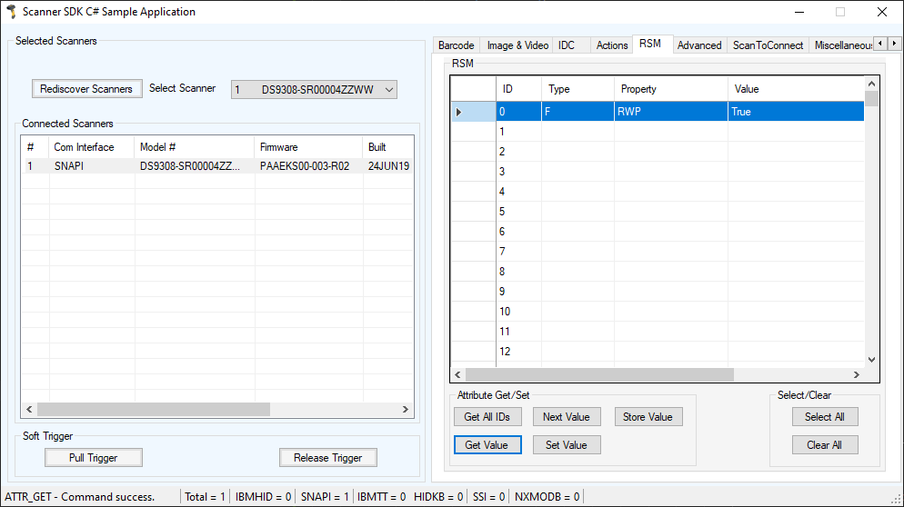
Figure 28: RSM Attribute Values for Selected IDsTo set parameters of a specific device, such as UPC-A status or Beeper Volume, use the following procedure.
To set an attribute, select and edit the attribute value in the RSM window data grid. Then select the entire row of the changed attribute and click Set Value or Store Value. Clicking these buttons execute an ExecCommand API call using the ATTR_SET or ATTR_STORE method and XML code shown below.
<inArgs>
<scannerID>1</scannerID>
<cmdArgs>
<arg-xml>
<attrib_list>
<attribute>
<id>1</id>
<datatype>F</datatype>
<value>False</value>
</attribute>
</attrib_list>
</arg-xml>
</cmdArgs>
</inArgs>
NOTE The <scannerID> tag in the XML contains the scanner's ID selected from the Connected Scanners list and the <attrib_list> tag contains the <attribute> tags selected in the RSM grid.
Examples
These examples demonstrate how to enable/disable a symbology, program an ADF rule, control beeper volume and control LEDs.
Before starting the example, scan the Set All Defaults barcode below to return all parameters to the scanner's default values (replacing the scanner's current settings). Refer to the scanner's Product Reference Guide for default values.
Enable/Disable a Symbology
To disable the UPC-A symbology, determine the attribute ID of UPC-A by referencing the scanner's Product Reference Guide. The attribute ID of the UPC-A parameter is 1. To change and validate the setting, use the following procedure:
If the command executed successfully, you cannot scan the following UPC-A barcode.
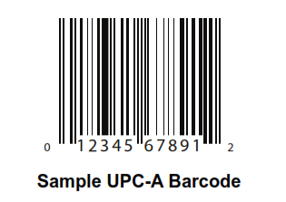
Programming an ADF Rule
If you want to create an ADF rule to add the prefix A to any barcode and an Enter key after scanning a barcode, you must modify the ADF buffer of the scanner. The attribute ID of the ADF rule is 392.
To change and validate the setting:
USB Host Type = HID Keyboard Wedge
Scan the barcode below, or follow the procedure in Host Variant Switching to switch the scanner to HID keyboard mode. This enables the scanner to send data to any text editor.
The sample application then executes an ExecCommand API call using the ATTR_STORE method and the following XML code:
<inArgs>
<scannerID>1</scannerID>
<cmdArgs>
<arg-xml>
<attrib_list>
<attribute>
<id>392</id>
<datatype>A</datatype>
<value>0x01 0x0C 0x11 0xF4 0x14 0x10 0x47 0x0D</value>
</attribute>
</attrib_list>
</arg-xml>
</cmdArgs>
</inArgs>
Beeper Volume Control
Suppose you want to change the beeper volume of the scanner. The corresponding attribute ID is 140 and the scanner beeper has three volume levels:
To change and validate this setting:
The sample application then executes an ExecCommand API call with the ATTR_SET or ATTR_STORE method and the following XML code:
<inArgs>
<scannerID>1</scannerID>
<cmdArgs>
<arg-xml>
<attrib_list>
<attribute>
<id>140</id>
<datatype>B</datatype>
<value>2</value>
</attribute>
</attrib_list>
</arg-xml>
</cmdArgs>
</inArgs>
After successfully executing the command, scan the Sample UPC-A barcode again and note that the beeper volume is lower.
NOTE Changes made using the Store Value commands are permanent (persistent over power down and power up cycles). Changes made using the Set Value command are temporary (parameters set using this temporary command are lost after the next power down).
Beeper and LED Control
Suppose you want to beep the scanner or light the LED of the scanner. The Action Attribute ID is 6000.
To change and validate this setting:
To light the LED of the scanner execute an ExecCommand API call with the ATTR_SET or ATTR_STORE method and the following XML code:
<inArgs>
<scannerID>1</scannerID>
<cmdArgs>
<arg-xml>
<attrib_list>
<attribute>
<id>6000</id>
<datatype>X</datatype>
<value>43</value>
</attribute>
</attrib_list>
</arg-xml>
</cmdArgs>
</inArgs>
Click Switch Host Mode and the scanner reboots and sets to the selected target mode.
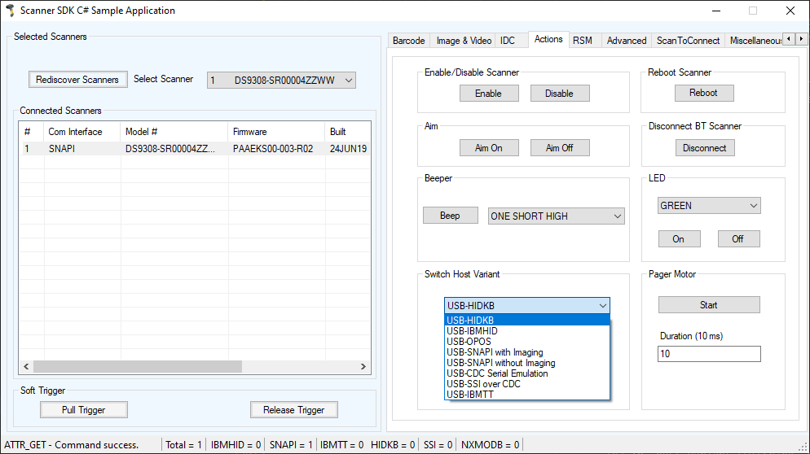
Figure 29: Changing Host ModeClicking Switch Host Mode in the sample application executes an ExecCommand API call with the DEVICE_SWITCH_HOST_MODE method and the following XML code:
<inArgs>
<scannerID>1</scannerID>
<cmdArgs>
<arg-string>XUA-45001-1</arg-string>
<arg-bool>TRUE</arg-bool>
<arg-bool>FALSE</arg-bool>
</cmdArgs>
</inArgs>
When you are in HID Keyboard mode the only allowed target host variants are IBM Hand-held USB and SNAPI.
Three firmware upgrade scenarios that should be considered are discussed below.
Scenario A: Loading a compatible, different version of firmware from the firmware already on the scanner.
Upgrading the firmware on a scanner includes two steps:
Scenario B: Loading the same version of firmware that is already on the scanner.
Scenario C: Loading an incompatible version of firmware on the scanner.
A firmware file can include multiple components. Before downloading firmware to the scanner, the scanner driver reads the header information of each firmware component to validate the model number and version. If the scanner driver determines that the firmware component model number does not match the scanner, the component does not load. This process continues to verify each remaining component in the firmware file.
Firmware Upgrade ProcedureObtain the latest firmware .DAT file for loading to a scanner using 123Scan.
Using 123Scan2, confirm you have the latest scanner plug-in. The plug-in contains a number of files including the firmware file and release notes.
Clicking Update in the sample application executes an ExecCommand API call with the UPDATE_FIRMWARE method and the following XML code:
<inArgs>
<scannerID>1</scannerID>
<cmdArgs>
<arg-string>D:\scanner\ScannerFW\DS6707\DS6707X4.DAT</arg-string>
<arg-int>2</arg-int>
</cmdArgs>
</inArgs>
The OnScanRMDEvent function has two parameters where the first short type parameter contains the event type described above. The six event type values are listed in Table 11.
Table 11: Firmware Update Event Types
| Event Value | Event Type | Description |
|---|---|---|
| 11 | SCANNER_UF_SESS_START | Triggered when flash download session starts. |
| 12 | SCANNER_UF_DL_START | Triggered when component download starts. |
| 13 | SCANNER_UF_DL_PROGRESS | Triggered when block(s) of flash completed. |
| 14 | SCANNER_UF_DL_END | Triggered when component download ends |
| 15 | SCANNER_UF_SESS_END | Triggered when flash download session ends |
| 16 | SCANNER_UF_STATUS | Triggered when update error or status |
The second parameter of the same function contains an XML for the above event types. By processing the XML further information can be obtained. The formats of the receiving XMLs for each event types are as follows. All XMLs are containing the information about the scanner that it updates.
SCANNER_UF_SESS_START
<?xml version="1.0" encoding="UTF-8"?>
<outArgs>
<scannerID>1</scannerID>
<arg-xml>
<sess_start>
<modelnumber>DS670-SR20001ZZR</modelnumber>
<serialnumber>S/N:7108E15933CA1B4BB776F7BDB4B3F826</serialnumber>
<GUID>7108E15933CA1B4BB776F7BDB4B3F826</GUID>
<maxcount>3075</maxcount>
<status>0</status>
</sess_start>
</arg-xml>
</outArgs>
The <maxcount> tag contains the number of records in the firmware file.
SCANNER_UF_DL_START
<?xml version="1.0" encoding="UTF-8"?>
<outArgs>
<scannerID>1</scannerID>
<arg-xml>
<dl_start>
<modelnumber>DS670-SR20001ZZR</modelnumber>
<serialnumber>S/N:7108E15933CA1B4BB776F7BDB4B3F826</serialnumber>
<GUID>7108E15933CA1B4BB776F7BDB4B3F826</GUID>
<software_component>0</software_component>
<status>0</status>
</dl_start>
</arg-xml>
</outArgs>
The <software_component> tag contains the component number that downloads started.
SCANNER_UF_DL_PROGRESS
<?xml version="1.0" encoding="UTF-8"?>
<outArgs>
<scannerID>1</scannerID>
<arg-xml>
<dl_progress>
<modelnumber> DS670-SR20001ZZR </modelnumber>
<serialnumber>S/N:7108E15933CA1B4BB776F7BDB4B3F826</serialnumber>
<GUID>7108E15933CA1B4BB776F7BDB4B3F826</GUID>
<software_component>1</software_component>
<progress>7</progress>
<status>600</status>
</dl_progress>
</arg-xml>
</outArgs>
The <progress> tag contains the record number that it downloading at that moment. The <status> tag contains the status of the download progressing record. 600 value means that it is the resident firmware.
SCANNER_UF_DL_END
<?xml version="1.0" encoding="UTF-8"?>
<outArgs>
<scannerID>1</scannerID>
<arg-xml>
<dl_end>
<modelnumber> DS670-SR20001ZZR </modelnumber>
<serialnumber>S/N:7108E15933CA1B4BB776F7BDB4B3F826</serialnumber>
<GUID>7108E15933CA1B4BB776F7BDB4B3F826</GUID>
<software_component>2</software_component>
<size>0</size>
<status>0</status>
</dl_end>
</arg-xml>
</outArgs>
SCANNER_UF_SESS_END
<?xml version="1.0" encoding="UTF-8"?>
<outArgs>
<scannerID>1</scannerID>
<arg-xml>
<sess_end>
<modelnumber> DS670-SR20001ZZR </modelnumber>
<serialnumber>S/N:7108E15933CA1B4BB776F7BDB4B3F826</serialnumber>
<GUID>7108E15933CA1B4BB776F7BDB4B3F826</GUID>
<status>0</status>
</sess_end>
</arg-xml>
</outArgs>
SCANNER_UF_STATUS
<?xml version="1.0" encoding="UTF-8"?>
<outArgs>
<scannerID>1</scannerID>
<arg-xml>
<sess_info>
<modelnumber> DS670-SR20001ZZR </modelnumber>
<serialnumber>S/N:7108E15933CA1B4BB776F7BDB4B3F826</serialnumber>
<GUID>7108E15933CA1B4BB776F7BDB4B3F826</GUID>
<status>506</status>
</sess_info>
</arg-xml>
</outArgs>
After the file transfer is complete, click Launch to activate (program into the scanner) the new firmware. Activation takes approximately one minute, during which the LED blinks red and scanning barcode data is disabled. During activation, the scanner does not respond to network queries. When activation (programming) completes, the scanner automatically reboots (the LED turns off), emits a power up beep and restarts with the new upgraded firmware.
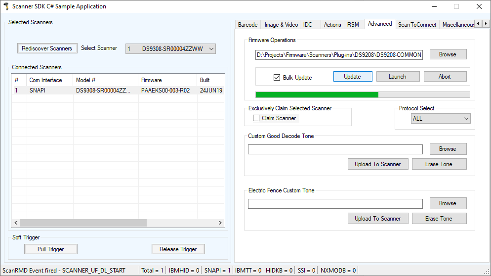
Figure 30: Firmware Upgrade Through Bulk (Faster Download Mode) ChannelScan Scan Write can be used to "commission" tags (change the Serial Number and EPC id). This information gets written to the tag. Scan Scan Write works with all interfaces (except Keyboard Wedge) but SNAPI is recommended.
NOTE The new tab control will be visible only when a DS9908R device is connected and selected from the list of barcode scanners currently connected to the demo application.
Follow these steps.
Select "Discover Scanners". DS9908-xxxxxxxxxxx will appear in the "Connected Scanners List".
Select the "Scan Scan Write" tab you will see a screen similar to the one below.
NOTE: The new tab control will be visible only when a DS9908R device is connected and selected from the list of barcode scanners currently connected to the demo application.
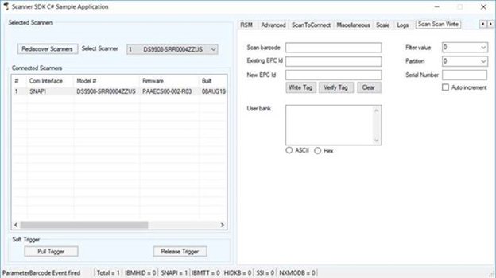
Figure 31: Device DiscoveryScan the RFID tag. The Existing EPC id, Filter value, Position, Serial Number and User Bank data (if applicable) will be populated. See screen shot below.
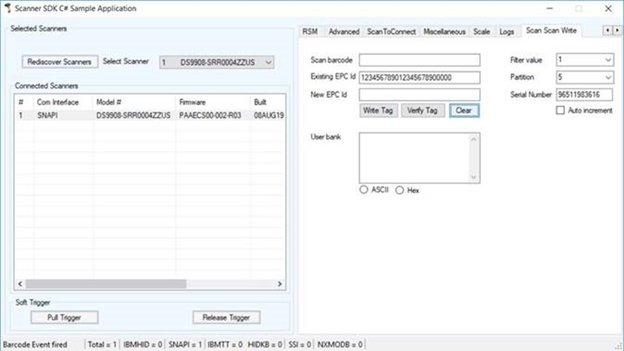
Figure 32: Scan RFID TagScan the barcode. The Scan Barcode and New EPC id will be populated. See screen shot below.
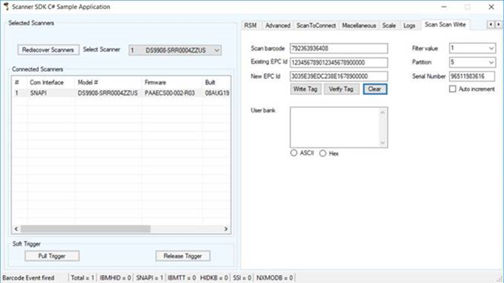
Figure 33: Scan BarcodeEdit the Serial Number if desired. New EPC id will change to reflect the new Serial Number.
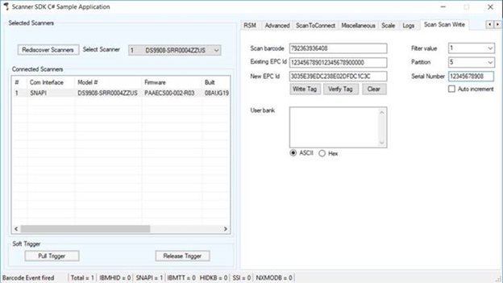
Figure 34: Edit Serial NumberRescan the RFID tag and select "Write tag". The new EPC id will be written to the RFID tag. A green checkmark will appear after the new EPC id. Or red X if.
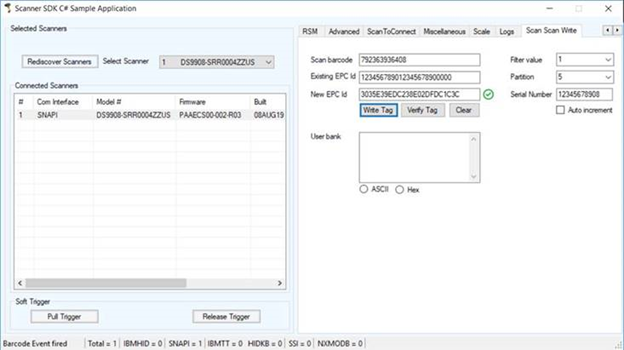
Figure 35: Write TagSelect "Clear" to clear the fields.
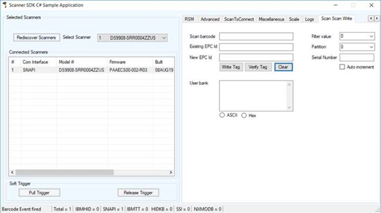
Figure 36: Clear FieldsRescan the RFID tag and Select "verify tag" to verify the contents.
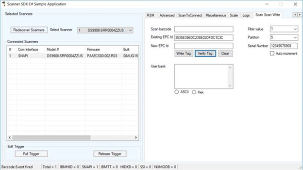
Figure 37: Verify TagThis section provides a step by step guide to writing simple applications using CoreScanner APIs.
Before you start to write applications using CoreScanner APIs, please prepare your development environment properly.
To create an empty project in Microsoft Visual Studio 2017 (create a console project):
Go to New → New → Project
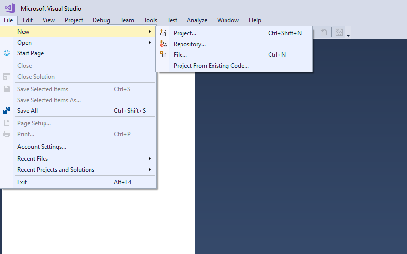
Figure 38: Create New ProjectSelect Project Visual C# and Template as Console App (.NET Framework) and type a name for your project. In this example, it is ConsoleApplication1.
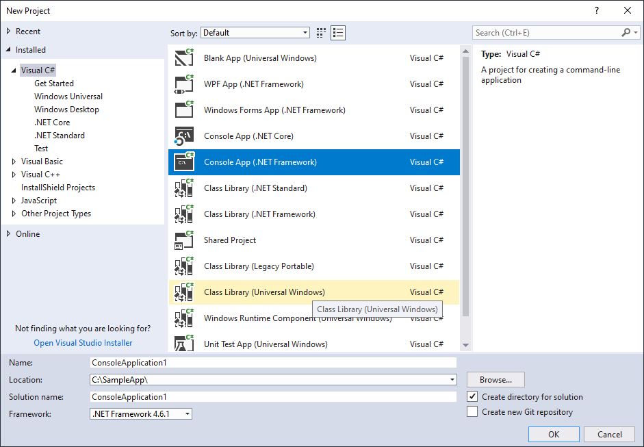
Figure 39: C# Console ApplicationImport CoreScanner as a reference into your application. Go to Project → Add Reference.
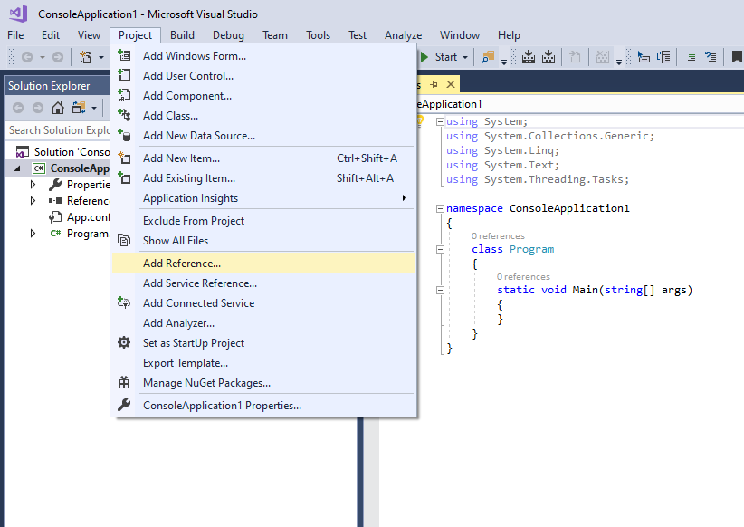
Figure 40: Add ReferenceSelect the CoreScanner Type Library from the COM tab and click OK.
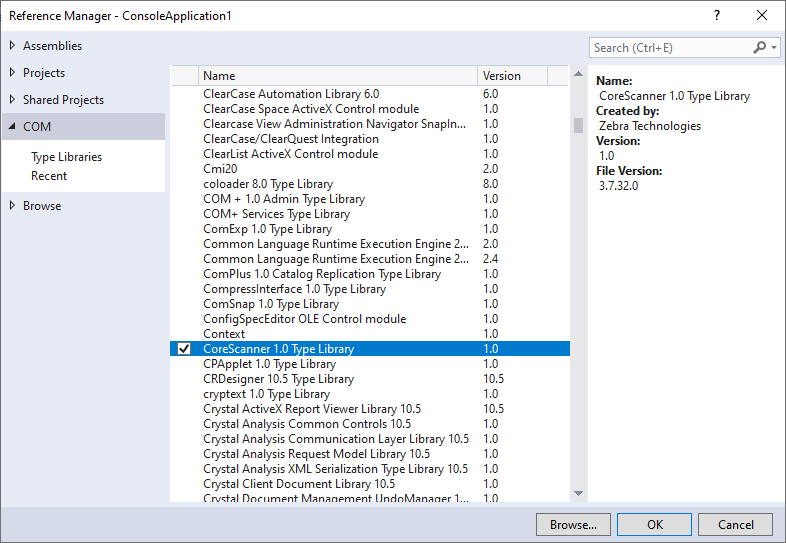
Figure 41: CoreScanner Type LibraryTo avoid versioning conflicts between different versions of the COM component set Embed Interop Types to False in the reference properties windows.
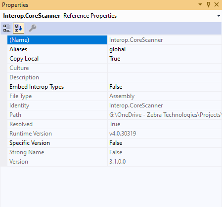
Figure 42: COM Interop TypeCoreScanner is listed in your project under references as shown below.
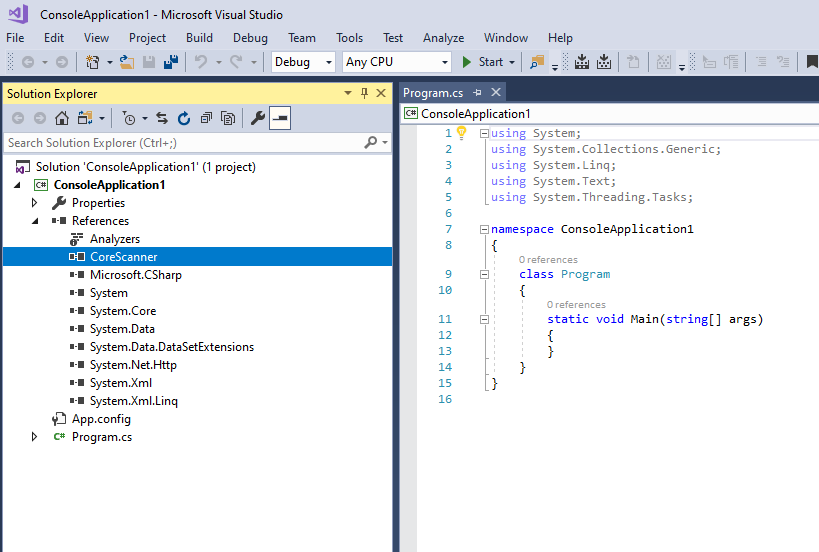
Figure 43: CoreScanner ReferenceYou are now ready to import the CoreScanner library into your application. After importing, you can declare and instantiate the CoreScanner class for the application.
Open the Program.cs file and enter the modifications as shown below.
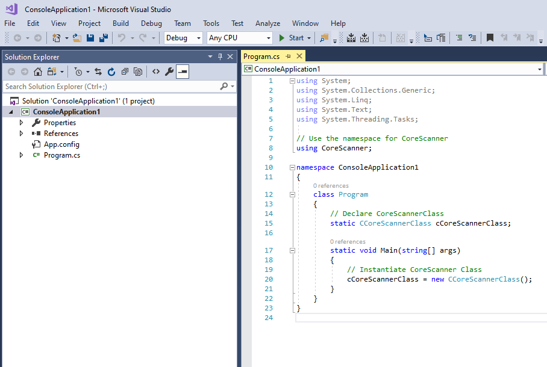
Figure 44: CoreScanner InitializationAfter you instantiate CoreScanner class into your application you can call Open API as shown below.
using System;
using System.Collections.Generic;
using System.Text;
using CoreScanner;
namespace ConsoleApplication1
{
class Program
{
// Declare CoreScannerClass
static CCoreScannerClass cCoreScannerClass;
static void Main(string[] args)
{
//Instantiate CoreScanner Class
cCoreScannerClass = new CCoreScannerClass();
//Call Open API
short[] scannerTypes = new short[1]; // Scanner Types you are interested in
scannerTypes[0] = 1; // 1 for all scanner types
short numberOfScannerTypes = 1; // Size of the scannerTypes array
int status; // Extended API return code
cCoreScannerClass.Open(0, scannerTypes, numberOfScannerTypes, out status);
if (status == 0)
{
Console.WriteLine("CoreScanner API: Open Successful");
}
else
{
Console.WriteLine("CoreScanner API: Open Failed");
}
}
}
}
If you have successfully executed all the commands, you see the following output on the console window.
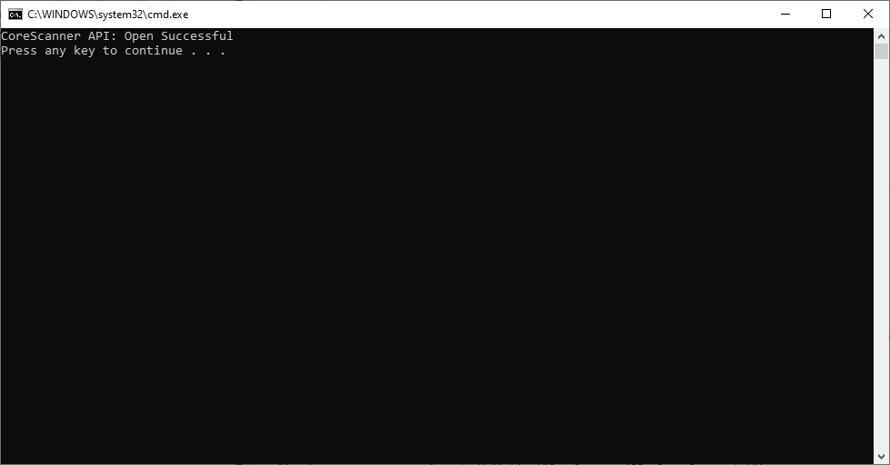
Figure 45: Open API Success - Console WindowAfter you call Open API as described above you can call the GetScanners API as shown below.
using System;
using System.Collections.Generic;
using System.Text;
using CoreScanner;
namespace ConsoleApplication1
{
class Program
{
// Declare CoreScannerClass
static CCoreScannerClass cCoreScannerClass;
static void Main(string[] args)
{
//Instantiate CoreScanner Class
cCoreScannerClass = new CCoreScannerClass();
//Call Open API
short[] scannerTypes = new short[1]; // Scanner Types you are interested in
scannerTypes[0] = 1; // 1 for all scanner types
short numberOfScannerTypes = 1; // Size of the scannerTypes array
int status; // Extended API return code
cCoreScannerClass.Open(0, scannerTypes, numberOfScannerTypes, out status);
// Lets list down all the scanners connected to the host
short numberOfScanners; // Number of scanners expect to be used
int[] connectedScannerIDList = new int[255]; // List of scanner IDs to be returned
string outXML; // Scanner details output
cCoreScannerClass.GetScanners(out numberOfScanners, connectedScannerIDList, out outXML, out status);
Console.WriteLine(outXML);
}
}
}
If you have successfully executed all the commands, you see the following output on the console window.
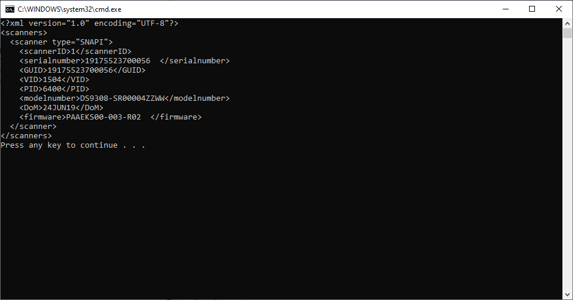
Figure 46: GetScanners API Success - Console WindowAfter you call Open API as described above, you can call ExecCommand API as shown below.
using System;
using System.Collections.Generic;
using System.Text;
using CoreScanner;
namespace ConsoleApplication1
{
class Program
{
// Declare CoreScannerClass
static CCoreScannerClass cCoreScannerClass;
static void Main(string[] args)
{
// Instantiate CoreScanner Class
cCoreScannerClass = new CCoreScannerClass();
// Call Open API
short[] scannerTypes = new short[1]; // Scanner Types you are interested in
scannerTypes[0] = 1; // 1 for all scanner types
short numberOfScannerTypes = 1; // Size of the scannerTypes array
int status; // Extended API return code
cCoreScannerClass.Open(0, scannerTypes, numberOfScannerTypes, out status);
// Let's beep the beeper
int opcode = 6000; // Method for Beep the beeper
string outXML; // Output
string inXML = "<inArgs>" +
"<scannerID>1</scannerID>" + // The scanner you need to beep
"<cmdArgs>" +
"<arg-int>3</arg-int>" + // 4 high short beep pattern
"</cmdArgs>" +
"</inArgs>";
cCoreScannerClass.ExecCommand(opcode, ref inXML, out outXML, out status);
}
}
}
If you have successfully executed all the commands, you see the following output on the console window. There is no visual output for this beep command but an audible beep sounds from the scanner.
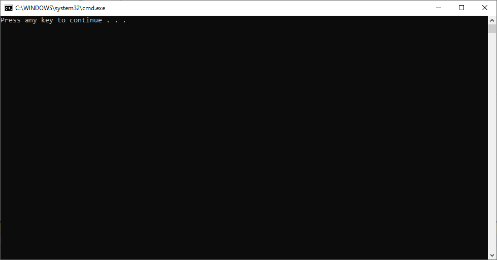
Figure 47: ExecCommand API Success (Scanner Beep) - Console WindowAfter you call Open API as described above, you can call ExecCommand API as shown below.
using System;
using System.Collections.Generic;
using System.Text;
using CoreScanner;
namespace ConsoleApplication1
{
class Program
{
// Declare CoreScannerClass
static CCoreScannerClass cCoreScannerClass;
static void Main(string[] args)
{
// Instantiate CoreScanner Class
cCoreScannerClass = new CCoreScannerClass();
// Call Open API
short[] scannerTypes = new short[1]; // Scanner Types you are interested in
scannerTypes[0] = 1; // 1 for all scanner types
short numberOfScannerTypes = 1; // Size of the scannerTypes array
int status; // Extended API return code
cCoreScannerClass.Open(0, scannerTypes, numberOfScannerTypes, out status);
// Let's retrieve assert tracking information
int opcode = 5001; // Method for Get the scanner attributes
string outXML; // XML Output
string inXML = "<inArgs>" +
"<scannerID>1</scannerID>" + // The scanner you need to get the information
"<cmdArgs>" +
"<arg-xml>" +
"<attrib_list>20004,533,20007,1</attrib_list>" + // attribute numbers you need
"</arg-xml>" +
"</cmdArgs>" +
"</inArgs>";
cCoreScannerClass.ExecCommand(opcode, ref inXML, out outXML, out status);
Console.WriteLine(outXML);
}
}
}
If you have successfully executed all the commands, you see the following output on the console window.
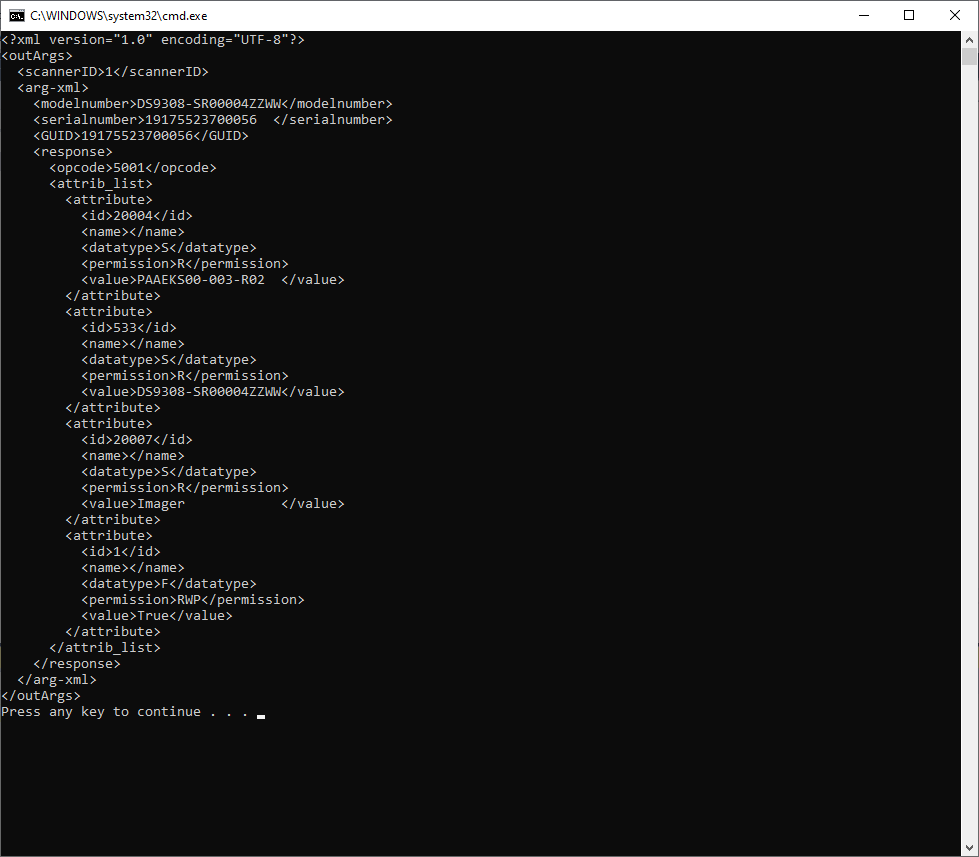
Figure 48: ExecCommand API Success (RSM GET) - Console WindowAfter you call Open API as described above, you can call ExecCommand API as shown below.
This method does not show any output but it sets the UPC-A to enable (True) or disable (False).
Create an empty C# Windows Forms App (.NET Framework) project in Microsoft Visual Studio.
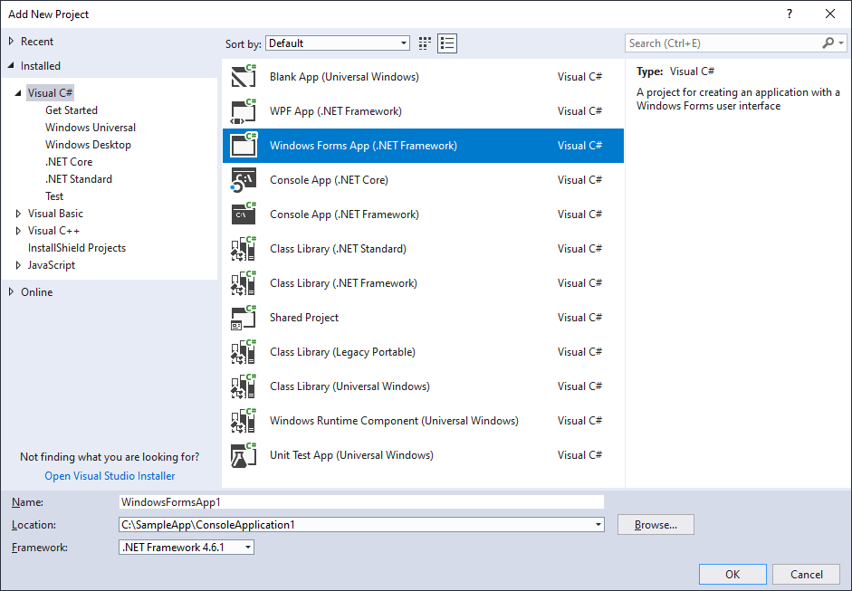
Figure 49: Create Empty C# Windows Forms ApplicationAdd a button and a text area into your application.
Include the following code segment into the Button click method.
try
{
// Instantiate CoreScanner Class
cCoreScannerClass = new CCoreScannerClass();
// Call Open API
short[] scannerTypes = new short[1]; // Scanner Types you are interested in
scannerTypes[0] = 1; // 1 for all scanner types
short numberOfScannerTypes = 1; // Size of the scannerTypes array
int status; // Extended API return code
cCoreScannerClass.Open(0, scannerTypes, numberOfScannerTypes, out status);
// Subscribe for barcode events in cCoreScannerClass
cCoreScannerClass.BarcodeEvent += new _ICoreScannerEvents_BarcodeEventEventHandler(OnBarcodeEvent);
// Let's subscribe for events
int opcode = 1001; // Method for Subscribe events
string outXML; // XML Output
string inXML = "<inArgs>" +
"<cmdArgs>" +
"<arg-int>1</arg-int>" + // Number of events you want to subscribe
"<arg-int>1</arg-int>" + // Comma separated event IDs
"</cmdArgs>" +
"</inArgs>";
cCoreScannerClass.ExecCommand(opcode, ref inXML, out outXML, out status);
Console.WriteLine(outXML);
}
catch (Exception exp)
{
Console.WriteLine("Something wrong please check... " + exp.Message);
}
Implement a method to receive the event as shown below and populate the text box with scanned data.
void OnBarcodeEvent(short eventType, ref string pscanData)
{
string barcode = pscanData;
this.Invoke((MethodInvoker)delegate { textBox1.Text = barcode; });
}
If you execute the application and click on the button, the application instantiates CoreScanner and is ready to receive barcode events. Following image illustrates the output when you scan a barcode.
The following sample projects are published on GitHub.
This sample application demonstrates all the functionalities for Barcode Scanner SDK for Windows.
Microsoft Visual Studio Project (.zip) GitHub Repository
Microsoft Visual Studio Project (.zip) GitHub Repository
The Zebra Scanner SDK provides an easy to use yet powerful and extendible set of API commands to interface with scanner devices. The API commands include:
Once the SDKs Open and GetScanners commands are invoked and the list of connected scanners is retrieved, all other methods execute through the ExecCommand and ExecCommandAsync commands. This is a user friendly approach, and easy to code in terms of day-to-day programming.
With the evolution of the SDK's capabilities, it is easier to increase the number of methods rather than increase the number of API commands. The benefit to the user is that, once you have the system up and running, a new method is just an additional operation to the existing code.
In addition to the commands above, the Zebra Scanner SDK supports nine types of events:
See Write Simple Application USing the Scanner SDK API for a starter example of an application illustrating the Zebra Scanner SDK API.
NOTE For a list of a scanner's supported attribute (parameter) numbers and definitions, refer to the Product Reference Guide for that model scanner, available from the Zebra Support website at http://www.zebra.com/support. Attributes include configuration parameters, monitored data, and asset tracking information.
In the SDK context, scanner ID uniquely identifies a scanner device connected to the CoreScanner driver, and is required to communicate programmatically with the device. Developers need to call the GetScanners method of the CoreScanner API in order to retrieve the scanner IDs of connected devices. For example, to switch on a scanner's red LED, the scanner ID of that particular scanner must be obtained to provide that value in the <scannerID> element of inXML of the ExecCommand method call.
During each CoreScanner driver instance, scanner IDs are sequentially assigned to each connected device. When the CoreScanner driver is restarted, the array of connected scanners is reinitialized and previous scanner IDs may no longer be valid. In this case, the GetScanners method must be executed to obtain the new scanner IDs.
During a single CoreScanner driver instance, an RSM (Remote Scanner Management) supported scanner that is unplugged, and reconnected retaina its unique scanner ID. However, a non-RSM device is assigned a different scanner ID each time it is reconnected.
Opens an application instance from the user application or user library. This must be the first API command called before invoking any other API command from the user level application.
Syntax
| C# | C++ |
|---|---|
|
|
Parameters
reserved - Reserved argument. Set to 0.
sfTypes - Selects the types of scanners requested for use with the API.
Table 12: Values for sfTypes
| Code | Value | Scanner Category |
|---|---|---|
| SCANNER_TYPES_ALL | 1 | All Scanners |
| SCANNER_TYPES_SNAPI | 2 | SNAPI Scanners |
| SCANNER_TYPES_SSI | 3 | SSI Scanners (RS232) |
| SCANNER_TYPES_IBMHID | 6 | IBM Hand Held Scanners (USB OPOS) |
| SCANNER_TYPES_NIXMODB | 7 | Nixdorf Mode B scanners (RS232) |
| SCANNER_TYPES_HIDKB | 8 | USB HID Keyboard emulation scanners |
| SCANNER_TYPES_IBMTT | 9 | IBM Table Top Scanners |
lengthOfTypes - Number of elements or the size of sfTypes array
status - Return value for the command
Return Values
0 - Success.
Any other value - See Error and Status Codes on Appendix.
Gets a list of scanners of the requested types that are connected at any time. This command should be invoked after the Open command.
Syntax
| C# | C++ |
|---|---|
|
|
Parameters
numberOfScanners - Number of connected scanners of requested type(s).
sfScannerIDList - Array of scannerIDs of the requested type(s). The size of the array is 255 (MAX_NUM_DEVICES).
outXML - XML string-scanner meta information.
status - Return value for the command.
Return Values
0 - Success.
Any other value - See Error and Status Codes on Appendix.
Provides synchronous execution of a method via an opcode.
Syntax
| C# | C++ |
|---|---|
|
|
Parameters
opcode - Method to be executed. See Appendix for opcodes.
inXML - Relevant argument list for the opcode, structured into an XML string.
outXML - XML string, scanner meta information.
status - Return value for the command.
Return Values
0 - Success.
Any other value - See Error and Status Codes on Appendix.
Provides asynchronous execution of a method via an opcode. Any response data is retrieved as CommandResponseEvents.
HRESULT STDMETHODCALLTYPE ExecCommandAsync(
/* [in] */ LONG opcode,
/* [in] */ BSTR *inXML,
/* [out] */ LONG *status) = 0;
Syntax
| C# | C++ |
|---|---|
|
|
Parameters
opcode - Method to be executed. See Appendix for opcodes.
inXML - Relevant argument list for the opcode, structured into an XML string.
outXML - XML string, scanner meta information.
status - Return value for the command.
Return Values
0 - Success.
Any other value - See Error and Status Codes on Appendix.
Closes the application instance through the CoreScanner service.
Syntax
| C# | C++ |
|---|---|
|
|
Parameters
reserved - Reserved argument. Set to 0.
status - Return value for the command.
Return Values
0 - Success.
Any other value - See Error and Status Codes on Appendix.
The user application must register for each event category separately to receive events for that category. Use the methods REGISTER_FOR_EVENTS and UNREGISTER_FOR_EVENTS for this purpose (see Table 13 on Appendix).
Triggered when an imaging scanner captures images in image mode. To receive ImageEvents, an application needs to execute the REGISTER_FOR_EVENTS method with the SUBSCRIBE_IMAGE event type.
Syntax
| C# | C++ |
|---|---|
|
|
Parameters
eventType - Type of image event received (see Table 13).
Table 13: Image Event Types
| Event Type | Value | Description |
|---|---|---|
| IMAGE_COMPLETE | 1 | Triggered when complete image captured |
| IMAGE_TRAN_STATUS | 2 | Triggered when image error or status |
size - Size of image data buffer.
imageFormat - Format of image. (see Table 14)
Table 14: Image Formats
| Event Type | Value |
|---|---|
| JPEG_FILE_SELECTION | 1 |
| BMP_FILE_SELECTION | 3 |
| TIFF_FILE_SELECTION | 4 |
sfimageData - Image data buffer.
pScannerData - Information in XML format about the scanner (ID, Model Number, Serial Number and GUID) that triggered the image event.
<?xml version="1.0" encoding="UTF-8"?>
<outArgs>
<scannerID>1</scannerID>
<arg-xml>
<modelnumber>DS6707-SR20001ZZR</modelnumber>
<serialnumber>7114000503322</serialnumber>
<GUID>33C01F39EB23D949B5F3DBF643304FC4</GUID>
</arg-xml>
</outArgs>
Triggered when an imaging scanner captures video in video mode. To receive VideoEvents, an application needs to execute the REGISTER_FOR_EVENTS method with the SUBSCRIBE_VIDEO event type.
Syntax
| C# | C++ |
|---|---|
|
|
Parameters
eventType - Type of video event received (see Table 15).
Table 15: Video Event Types
| Event Type | Value | Description |
|---|---|---|
| VIDEO_FRAME_COMPLETE | 1 | Triggered when complete video frame is captured. |
size - Size of video data buffer.
sfvideoData - Video data buffer.
pScannerData - Reserved parameter: always returns an empty string.
Triggered when a scanner captures barcodes. To receive BarcodeEvents, an application needs to execute the REGISTER_FOR_EVENTS method with the SUBSCRIBE_BARCODE event type.
Syntax
| C# | C++ |
|---|---|
|
|
Parameters
eventType - Type of video event received (see Table 16).
Table 16: Barcode Event Types
| Event Type | Value | Description |
|---|---|---|
| SCANNER_DECODE_GOOD | 1 | Triggered when a decode is successful. |
pscanData - Barcode string that contains information about the scanner that triggered the barcode event including data type, data label and raw data of the scanned barcode.
<?xml version="1.0" encoding="UTF-8"?>
<outArgs>
<scannerID>1</scannerID>
<arg-xml>
<scandata>
<modelnumber>DS6707-SR20001ZZR</modelnumber>
<serialnumber>7114000503322</serialnumber>
<GUID>33C01F39EB23D949B5F3DBF643304FC4</GUID>
<datatype>8</datatype>
<datalabel>0x30 0x32 0x31 0x38 0x39 0x38 0x36 0x32</datalabel>
<rawdata>0x30 0x32 0x31 0x38 0x39 0x38 0x36 0x32</rawdata>
</scandata>
</arg-xml>
</outArgs>
The value of the <datatype> in the XML above indicates the barcode type of the scanned barcode.
Table 17 lists the values received in IBM Hand-Held USB, SNAPI and Wincor-Nixdorf RS-232 Mode B communication protocols for each supported barcode type.
Table 17: Barcode Data Types
| Barcode Data Types | Communication Protocol | ||
|---|---|---|---|
| SNAPI | IBM Hand-Held | NIXDORF Mode B | |
| Code 39 | 1 | 1 | 1 |
| Codabar | 2 | 2 | 2 |
| Code 128 | 3 | 3 | 3 |
| Discrete (Standard) 2 of 5 | 4 | 4 | 4 |
| IATA | 5 | N/A | 4 |
| Interleaved 2 of 5 | 6 | 6 | 6 |
| Code 93 | 7 | 7 | 7 |
| UPC-A | 8 | 8 | 8 |
| UPC-E0 | 9 | 9 | 9 |
| EAN-8 | 10 | 10 | 10 |
| EAN-13 | 11 | 11 | 8 |
| Code 11 | 12 | N/A | N/A |
| Code 49 | 13 | 13 | N/A |
| MSI | 14 | N/A | 14 |
| EAN-128 | 15 | 15 | 15 |
| UPC-E1 | 16 | N/A | N/A |
| PDF-417 | 17 | 17 | 17 |
| Code 16K | 18 | N/A | N/A |
| Code 39 Full ASCII | 19 | N/A | N/A |
| UPC-D | 20 | N/A | N/A |
| Code 39 Trioptic | 21 | N/A | N/A |
| Bookland | 22 | N/A | 8 |
| Coupon Code | 23 | N/A | N/A |
| NW-7 | 24 | N/A | N/A |
| ISBT-128 | 25 | N/A | N/A |
| Micro PDF | 26 | N/A | 26 |
| DataMatrix | 27 | 27 | 27 |
| QR Code | 28 | 28 | 28 |
| Micro PDF CCA | 29 | N/A | N/A |
| PostNet US | 30 | N/A | N/A |
| Planet Code | 31 | N/A | N/A |
| Code 32 | 32 | N/A | N/A |
| ISBT-128 Con | 33 | N/A | N/A |
| Japan Postal | 34 | N/A | N/A |
| Australian Postal | 35 | N/A | N/A |
| Dutch Postal | 36 | N/A | N/A |
| MaxiCode | 37 | 37 | 37 |
| Canadian Postal | 38 | N/A | N/A |
| UK Postal | 39 | N/A | N/A |
| Macro PDF | N/A | N/A | |
| Micro QR code | 44 | 44 | 28 |
| Aztec | 45 | 45 | 45 |
| GS1 Databar (RSS-14) | 48 | 48 | 48 |
| RSS Limited | 49 | 49 | 49 |
| GS1 Databar Expanded (RSS Expanded) | 50 | 50 | 50 |
| Scanlet | 55 | N/A | N/A |
| UPC-A + 2 Supplemental | 72 | 72 | N/A |
| UPC-E0 + 2 Supplemental | 73 | 73 | N/A |
| EAN-8 + 2 Supplemental | 74 | 74 | N/A |
| EAN-13 + 2 Supplemental | 75 | 75 | N/A |
| UPC-E1 + 2 Supplemental | 80 | N/A | N/A |
| CCA EAN-128 | 81 | N/A | N/A |
| CCA EAN-13 | 82 | N/A | N/A |
| CCA EAN-8 | 83 | N/A | N/A |
| CCA RSS Expanded | 84 | N/A | N/A |
| CCA RSS Limited | 85 | N/A | N/A |
| CCA RSS-14 | 86 | N/A | N/A |
| CCA UPC-A | 87 | N/A | N/A |
| CCA UPC-E | 88 | N/A | N/A |
| CCC EAN-128 | 89 | N/A | N/A |
| TLC-39 | 90 | N/A | N/A |
| CCB EAN-128 | 97 | N/A | N/A |
| CCB EAN-13 | 98 | N/A | N/A |
| CCB EAN-8 | 99 | N/A | N/A |
| CCB RSS Expanded | 100 | N/A | N/A |
| CCB RSS Limited | 101 | N/A | N/A |
| CCB RSS-14 | 102 | N/A | N/A |
| CCB UPC-A | 103 | N/A | N/A |
| CCB UPC-E | 104 | N/A | N/A |
| Signature Capture | 105 | N/A | N/A |
| Matrix 2 of 5 | 113 | N/A | N/A |
| Chinese 2 of 5 | 114 | N/A | N/A |
| UPC-A + 5 Supplemental | 136 | 136 | N/A |
| UPC-E0 + 5 Supplemental | 137 | 137 | N/A |
| EAN-8 + 5 Supplemental | 138 | 138 | N/A |
| EAN-13 + 5 Supplemental | 139 | 139 | N/A |
| UPC-E1 + 5 Supplemental | 144 | N/A | N/A |
NOTE A barcode data type marked as N/A is unsupported by that communication protocol. The SDK typically returns a value of 0 for these barcode data types. However, in some cases the SDK may identify these symbologies as a related data type. For example, UPC-A + 2 Supplemental is not a supported symbology in Nixdorf Mode B but the SDK identifies it as UPC-A.
Triggered when a scanner of a requested type attaches to the system or detaches from the system. The pairing of a Bluetooth scanner to a cradle does not trigger a PnP event. To receive information about a newly paired device, the GetScanners command must be called again. To receive PnPEvents, an application needs to execute the REGISTER_FOR_EVENTS method with the SUBSCRIBE_PNP event type.
Syntax
| C# | C++ |
|---|---|
|
|
Parameters
eventType - Type of PnP event received (see Table 18).
Table 18: PNP Event Types
| Event Type | Value | Description |
|---|---|---|
| SCANNER_ATTACHED | 0 | Triggered when a Zebra Scanner is attached. |
| SCANNER_DETACHED | 1 | Triggered when a Zebra Scanner is detached. |
ppnpData - PnP information string containing the asset tracking information of the attached or detached device.
Samples
Sample ppnpData XML for attachment of a direct scanner.
<?xml version="1.0" encoding="UTF-8"?>
<outArgs>
<arg-xml>
<scanners>
<scanner type="SNAPI">
<scannerID>1</scannerID>
<modelnumber>DS9808-SR00007C1WR</modelnumber>
<serialnumber>1026300507698 </serialnumber>
<GUID>77E48FC31C75444B90BE318FECFAE867</GUID>
</scanner>
</scanners>
<status>1</status>
</arg-xml>
</outArgs>
Sample ppnpData XML for attachment of a cascaded scanner. This XML can be received as a PnP event after a GetScanners command, if there are devices newly paired to a Bluetooth cradle.
<?xml version="1.0" encoding="UTF-8"?>
<outArgs>
<arg-xml>
<scanners>
<scanner type="USBIBMHID">
<scannerID>1</scannerID> <!-- Information about Bluetooth Cradle -->
<modelnumber>CR0078-SC10007WR </modelnumber>
<serialnumber>1020800512980 </serialnumber>
<GUID>3665579766A9514DAAF523D35E051674</GUID>
<pnp>0</pnp>
<scanner type="USBIBMHID">
<scannerID>2</scannerID> <!-- Information about Bluetooth Scanner -->
<modelnumber>DS6878-SR20007WR </modelnumber>
<serialnumber>M1M87R38Y </serialnumber>
<GUID></GUID>
<pnp>1</pnp>
</scanner>
</scanner>
</scanners>
<status>1</status>
</arg-xml>
</outArgs>
Receives RMD Events when updating firmware of the scanner. To receive RMD Events, an application needs to execute the REGISTER_FOR_EVENTS method with the SUBSCRIBE_RMD event type.
Syntax
| C# | C++ |
|---|---|
|
|
Parameters
eventType - Type of the RMD event received (see Table 19).
prmdData - ScanRMD information string containing the data of event. (See Firmware Upgrade Scenarios for more details on this string.)
Table 19: RMD Event Types
| Event Type | Value | Description |
|---|---|---|
| SCANNER_UF_SESS_START | 11 | Triggered when flash download session starts. |
| SCANNER_UF_DL_START | 12 | Triggered when component download starts. |
| SCANNER_UF_DL_PROGRESS | 13 | Triggered when block(s) of flash completed. |
| SCANNER_UF_DL_END | 14 | Triggered when component download ends. |
| SCANNER_UF_SESS_END | 15 | Triggered when flash download session ends. |
| SCANNER_UF_STATUS | 16 | Triggered when update error or status. |
| SCANNER_UC_SESS_START | 17 | Triggered when configuration push starts. |
| SCANNER_UC_PROGRESS | 18 | Triggered to indicate the current progress of the configuration push. |
| SCANNER_UC_SESS_END | 19 | Triggered when configuration push session ends. |
Received after an asynchronous command execution (ExecCommandAsync). To receive CommandResponseEvents, an application needs to execute the REGISTER_FOR_EVENTS method with the SUBSCRIBE_OTHER event type.
Syntax
| C# | C++ |
|---|---|
|
|
Parameters
status - Status of the executed command. (See Error and Status Codes on Appendix.)
prspData - CommandResponse information string that contains the outXML of the executed command.
Received when an exclusively claimed device is accessed by another client application. To receive IOEvents, an application needs to execute the REGISTER_FOR_EVENTS method with the SUBSCRIBE_OTHER event type. Standard practice is that an application handles these IO Events once it has claimed a scanner. While that application has the scanner claimed, other applications get STATUS_LOCKED when they try to execute commands directed toward the claimed scanner.
Syntax
| C# | C++ |
|---|---|
|
|
Parameters
type - Reserved parameter.
data - Reserved parameter.
Received when a SNAPI scanner changes its operational mode. To receive ScannerNotificationEvents, an application needs to execute the REGISTER_FOR_EVENTS method with the SUBSCRIBE_OTHER event type.
Syntax
| C# | C++ |
|---|---|
|
|
Parameters
notificationType - Type of the notification event received (see Table 20).
pScannerData - Information about the scanner (ID, Model Number, Serial Number. GUID) and notification data (if any) that triggered the notification event.
Table 20: Notification Event Types
| Event Type | Value | Description |
|---|---|---|
| DECODE_MODE | 1 | Triggered when a scanner changes its operation mode to decode. |
| SNAPSHOT_MODE | 2 | Triggered when a scanner changes its operation mode to image mode. |
| VIDEO_MODE | 3 | Triggered when a scanner changes its operation mode to video mode. |
| DEVICE_ENABLED | 13 | Triggered when the scanner is enabled. |
| DEVICE_DISABLED | 14 | Triggered when the scanner is disabled. |
| RTA_EVENT | 2000 | Triggered when RTA event is received. |
For more information, please refer to Real Time Alerts (RTA).
Triggered when an IDC-supported imaging scanner captures an image in Intelligent Document Capture (IDC) or Signature Capture mode. To receive a BinaryDataEvent, an application needs to execute the REGISTER_FOR_EVENT method with the SUBSCRIBE_IMAGE event type.
Syntax
| C# | C++ |
|---|---|
|
|
Parameters
eventType - Reserved.
size - Size of the BinaryData data buffer.
dataFormat - The format of the Binary DataEvent (see Table 21).
Table 21: Binary Data Event Types (Data Format)
| Date Format | Description |
|---|---|
| 0xB5 | IDC Format |
| 0x69 | Signature Capture Format |
sfBinaryData - IDC/Signature Capture data buffer.
pScannerData - Information in XML format about the scanner (ID, Model Number, Serial Number, and GUID) that triggered the BinaryDataEvent.
<?xml version="1.0" encoding="UTF-8"?>
<outArgs>
<scannerID>1</scannerID>
<arg-xml>
<modelnumber>DS6707-DC20007ZZR </modelnumber>
<serialnumber>1222800502597 </serialnumber>
<GUID>28B8BF91FB7F3A459CFF63BAEFDC767B</GUID>
<channel>usb_BULK</channel>
</arg-xml>
</outArgs>
NOTED The <channel> tag in the XML above refers to the USB channel which the scanner uses to send the Binary data. This can be usb_BULK or usb_HID.
Both Intelligent Document Capture (IDC) and Signature Capture data are presented with the BinaryDataEvent. This event is fired by the CoreScanner service when this binary capture data is available. A client application has to register for image events using the RegisterForEvents opcode in order to receive BinaryDataEvents from the CoreScanner driver. The image data payload of a BinaryDataEvent is passed through the VARIANT type argument sfBinaryData. The event type captured, IDC or Signature, is specified with the dataFormat parameter of the event handler function. Document Capture data is formatted according to the ISO15434 Specification (see Description of Intelligent Document Capture Format for details). Signature Capture data is formatted with the Zebra standard image format (refer to Signature Capture in the Appendix of Product Reference Guide for the image scanner in use).
| GET_VERSION (Value 1000) | |||||||||||||||||||
|---|---|---|---|---|---|---|---|---|---|---|---|---|---|---|---|---|---|---|---|
| Description | Gets the version of CoreScanner Driver | ||||||||||||||||||
| Asynchronous supported | No | ||||||||||||||||||
| Supported Scanner Communication Protocols | N/A | ||||||||||||||||||
InXml
|
|||||||||||||||||||
|
OutXml
Version of the CoreScanner.
|
|||||||||||||||||||
| REGISTER_FOR_EVENTS (Value 1001) | |||||||||||||||||||
| Description | Register for API events described API Events above. | ||||||||||||||||||
| Asynchronous supported | No | ||||||||||||||||||
| Supported Scanner Communication Protocols | N/A | ||||||||||||||||||
InXml
Table 22 lists the Event IDs for the inXML code above. Table 22: Event IDs
|
|||||||||||||||||||
|
OutXml
null |
|||||||||||||||||||
| UNREGISTER_FOR_EVENTS (Value 1002) | |||||||||||||||||||
| Description | Register for API events described API Events above. | ||||||||||||||||||
| Asynchronous supported | No | ||||||||||||||||||
| Supported Scanner Communication Protocols | N/A | ||||||||||||||||||
InXml
|
|||||||||||||||||||
|
OutXml
null |
|||||||||||||||||||
| CLAIM_DEVICE (Value 1500) | |||||||||||||||||||
| Description | Claim a specified device. | ||||||||||||||||||
| Asynchronous supported | No | ||||||||||||||||||
| Supported Scanner Communication Protocols | N/A | ||||||||||||||||||
InXml
|
|||||||||||||||||||
|
OutXml
null |
|||||||||||||||||||
| RELEASE_DEVICE (Value 1501) | |||||||||||||||||||
| Description | Release a specified device. | ||||||||||||||||||
| Asynchronous supported | No | ||||||||||||||||||
| Supported Scanner Communication Protocols | N/A | ||||||||||||||||||
InXml
|
|||||||||||||||||||
|
OutXml
null |
|||||||||||||||||||
| ABORT_MACROPDF (Value 2000) | |||||||||||||||||||
| Description | Abort MacroPDF of a specified scanner. | ||||||||||||||||||
| Asynchronous supported | No | ||||||||||||||||||
| Supported Scanner Communication Protocols | SNAPI | ||||||||||||||||||
|
|||||||||||||||||||
|
OutXml
null |
|||||||||||||||||||
| ABORT_UPDATE_FIRMWARE (Value 2001) | |||||||||||||||||||
| Description | Abort Firmware updates process of a specified scanner while it is progressing. | ||||||||||||||||||
| Asynchronous supported | No | ||||||||||||||||||
| Supported Scanner Communication Protocols | IBM Hand-held, IBM Table-top, SNAPI, SSI | ||||||||||||||||||
InXml
|
|||||||||||||||||||
|
OutXml
null
WARNING! If the scanners firmware is not backup protected, issuing this command during a firmware update may cause a corruption leaving the scanner inoperable. For models that are backup protected refer to the Scanner SDK for Windows website at: www.zebra.com/scannersdkforwindows.
|
|||||||||||||||||||
| AIM_OFF (Value 2002) | |||||||||||||||||||
| Description | Turn off the aiming of a specified scanner. | ||||||||||||||||||
| Asynchronous supported | No | ||||||||||||||||||
| Supported Scanner Communication Protocols | SNAPI | ||||||||||||||||||
|
|||||||||||||||||||
|
OutXml
null |
|||||||||||||||||||
| AIM_ON (Value 2003) | |||||||||||||||||||
| Description | Turn on the aiming of a specified scanner. | ||||||||||||||||||
| Asynchronous supported | No | ||||||||||||||||||
| Supported Scanner Communication Protocols | SNAPI | ||||||||||||||||||
|
|||||||||||||||||||
|
OutXml
null |
|||||||||||||||||||
| FLUSH_MACROPDF (Value 2005) | |||||||||||||||||||
| Description | Flush MacroPDF of a specified scanner. | ||||||||||||||||||
| Asynchronous supported | No | ||||||||||||||||||
| Supported Scanner Communication Protocols | SNAPI | ||||||||||||||||||
InXml
|
|||||||||||||||||||
|
OutXml
null |
|||||||||||||||||||
| DEVICE_PULL_TRIGGER (Value 2011) | |||||||||||||||||||
| Description | Pull the trigger of a specified scanner. | ||||||||||||||||||
| Asynchronous supported | N/A | ||||||||||||||||||
| Supported Scanner Communication Protocols |
SNAPI, IBM Hand-held*, IBM Table-top*, SSI*
* Supported auxiliary scanners if the firmware supports. |
||||||||||||||||||
InXml
|
|||||||||||||||||||
|
OutXml
null |
|||||||||||||||||||
| DEVICE_RELEASE_TRIGGER (Value 2012) | |||||||||||||||||||
| Description | Release the pulled trigger of a specified scanner. | ||||||||||||||||||
| Asynchronous supported | N/A | ||||||||||||||||||
| Supported Scanner Communication Protocols |
SNAPI, IBM Hand-held*, IBM Table-top*, SSI*
* Supported auxiliary scanners if the firmware supports. |
||||||||||||||||||
InXml
|
|||||||||||||||||||
|
OutXml
null |
|||||||||||||||||||
| SCAN_DISABLE (Value 2013) | |||||||||||||||||||
| Description | Disable scanning on a specified scanner | ||||||||||||||||||
| Asynchronous supported | N/A | ||||||||||||||||||
| Supported Scanner Communication Protocols | SNAPI, IBM Hand-held, IBM Table-top, Nixdorf Mode B, SSI | ||||||||||||||||||
InXml
|
|||||||||||||||||||
|
OutXml
null |
|||||||||||||||||||
| SCAN_ENABLE (Value 2014) | |||||||||||||||||||
| Description | Enable scanning on a specified scanner | ||||||||||||||||||
| Asynchronous supported | N/A | ||||||||||||||||||
| Supported Scanner Communication Protocols | SNAPI, IBM Hand-held, IBM Table-top, Nixdorf Mode B, SSI | ||||||||||||||||||
InXml
|
|||||||||||||||||||
|
OutXml
null |
|||||||||||||||||||
| SET_PARAMETER_DEFAULTS (Value 2015) | |||||||||||||||||||
| Description | Set parameters to default values of a specified scanner. | ||||||||||||||||||
| Asynchronous supported | No | ||||||||||||||||||
| Supported Scanner Communication Protocols | SNAPI | ||||||||||||||||||
InXml
|
|||||||||||||||||||
|
OutXml
null |
|||||||||||||||||||
| DEVICE_SET_PARAMETERS (Value 2016) | |||||||||||||||||||
| Description | Set parameter(s) of a specified scanner temporarily. Parameters set using this command are lost after the next power down. | ||||||||||||||||||
| Asynchronous supported | No | ||||||||||||||||||
| Supported Scanner Communication Protocols | SNAPI | ||||||||||||||||||
InXml
|
|||||||||||||||||||
|
OutXml
null
NOTE Refer to the pertinent scanner's Product Reference Guide for supported attribute numbers, types, and possible values.
|
|||||||||||||||||||
| SET_PARAMETER_PERSISTANCE (Value 2017) | |||||||||||||||||||
| Description | Set parameter(s) of a specified scanner persistently. Parameters set using this command are persistent over power down and power up cycles. | ||||||||||||||||||
| Asynchronous supported | No | ||||||||||||||||||
| Supported Scanner Communication Protocols | SNAPI | ||||||||||||||||||
InXml
|
|||||||||||||||||||
|
OutXml
null |
|||||||||||||||||||
| REBOOT_SCANNER (Value 2019) | |||||||||||||||||||
| Description | Reboot a specified scanner. Direct execution of this command on a Bluetooth scanner does not result in a reboot. This command needs to be sent to the scanner's associated cradle to reboot the Bluetooth scanner. | ||||||||||||||||||
| Asynchronous supported | N/A | ||||||||||||||||||
| Supported Scanner Communication Protocols | IBM Hand-held, IBM Table-top, SNAPI, SSI | ||||||||||||||||||
InXml
|
|||||||||||||||||||
|
OutXml
null |
|||||||||||||||||||
| DEVICE_CAPTURE_IMAGE (Value 3000) | |||||||||||||||||||
| Description | Change a specified scanner to snapshot mode. While in this mode, an imaging scanner blinks the green LED at one second intervals to indicate it is not in standard operating (decode) mode. The scanner comes to its standard operating mode after a trigger pull or the snapshot time out is exceeded. After a trigger pull, the CoreScanner driver triggers an ImageEvent containing the captured image. | ||||||||||||||||||
| Asynchronous supported | N/A | ||||||||||||||||||
| Supported Scanner Communication Protocols | SNAPI | ||||||||||||||||||
InXml
|
|||||||||||||||||||
|
OutXml
null |
|||||||||||||||||||
| DEVICE_CAPTURE_BARCODE (Value 3500) | |||||||||||||||||||
| Description | Change a specified scanner to decode mode. | ||||||||||||||||||
| Asynchronous supported | N/A | ||||||||||||||||||
| Supported Scanner Communication Protocols | SNAPI | ||||||||||||||||||
InXml
|
|||||||||||||||||||
|
OutXml
null |
|||||||||||||||||||
| DEVICE_CAPTURE_VIDEO (Value 4000) | |||||||||||||||||||
| Description | Change a specified scanner to video mode. In this mode, the imaging scanner behaves as a video camera as long as the trigger is pulled. When the trigger is released, the scanner returns to Decode Mode. As long as the trigger is pulled, the CoreScanner driver triggers VideoEvents that contain the video data. | ||||||||||||||||||
| Asynchronous supported | N/A | ||||||||||||||||||
| Supported Scanner Communication Protocols | SNAPI | ||||||||||||||||||
InXml
|
|||||||||||||||||||
|
OutXml
null |
|||||||||||||||||||
| ATTR_GETALL (Value 5000) | |||||||||||||||||||
| Description | Get all the attributes of a specified scanner. A synchronous call of this method returns an outXML like the example below. An asynchronous call of this event triggers a CommandResponseEvent. | ||||||||||||||||||
| Asynchronous supported | Yes | ||||||||||||||||||
| Supported Scanner Communication Protocols | IBM Hand-held, IBM Table-top, SNAPI, SSI | ||||||||||||||||||
InXml
|
|||||||||||||||||||
OutXml
NOTE Refer to the pertinent scanner's Product Reference Guide for supported attribute numbers, types, and possible values.
|
|||||||||||||||||||
| ATTR_GET (Value 5001) | |||||||||||||||||||
| Description | Query the values of attribute(s) of a specified scanner. An synchronous call of this method returns outXML like the example below. An asynchronous call of this event triggers a CommandResponseEvent. | ||||||||||||||||||
| Asynchronous supported | Yes | ||||||||||||||||||
| Supported Scanner Communication Protocols | IBM Hand-held, IBM Table-top, SNAPI, SSI | ||||||||||||||||||
InXml
|
|||||||||||||||||||
OutXml
|
|||||||||||||||||||
| ATTR_GETNEXT (Value 5002) | |||||||||||||||||||
| Description | Query the value of the next attribute to a given attribute of a specified scanner. A synchronous call of this method returns an outXML like the example below. An asynchronous call of this event triggers a CommandResponseEvent. | ||||||||||||||||||
| Asynchronous supported | Yes | ||||||||||||||||||
| Supported Scanner Communication Protocols | IBM Hand-held, IBM Table-top, SNAPI, SSI | ||||||||||||||||||
InXml
|
|||||||||||||||||||
OutXml
NOTE If the next available attribute is not readable (for example, an Action attribute), this command returns the next available readable attribute value.
|
|||||||||||||||||||
| ATTR_SET (Value 5004) | |||||||||||||||||||
| Description | Set the values of attribute(s) of a specified scanner. Attribute(s) set using this command are lost after the next power down. | ||||||||||||||||||
| Asynchronous supported | Yes | ||||||||||||||||||
| Supported Scanner Communication Protocols | IBM Hand-held, IBM Table-top, SNAPI, SSI | ||||||||||||||||||
InXml
|
|||||||||||||||||||
|
OutXml
null |
|||||||||||||||||||
| ATTR_STORE (Value 5005) | |||||||||||||||||||
| Description | Store the values of attribute(s) of a specified scanner. Attribute(s) store using this command are persistent over power down and power up cycles. | ||||||||||||||||||
| Asynchronous supported | Yes | ||||||||||||||||||
| Supported Scanner Communication Protocols | IBM Hand-held, IBM Table-top, SNAPI, SSI | ||||||||||||||||||
InXml
|
|||||||||||||||||||
|
OutXml
null |
|||||||||||||||||||
| GET_DEVICE_TOPOLOGY (Value 5006) | |||||||||||||||||||
| Description | Get the topology of devices that are connected to the calling system. | ||||||||||||||||||
| Asynchronous supported | No | ||||||||||||||||||
| Supported Scanner Communication Protocols | IBM Hand-held, IBM Table-top, SNAPI, SSI | ||||||||||||||||||
InXml
|
|||||||||||||||||||
OutXml
|
|||||||||||||||||||
| START_NEW_FIRMWARE (Value 5014) | |||||||||||||||||||
| Description | Start the updated firmware. This causes a reboot of the specified scanner. | ||||||||||||||||||
| Asynchronous supported | N/A | ||||||||||||||||||
| Supported Scanner Communication Protocols | IBM Hand-held, IBM Table-top, SNAPI, SSI | ||||||||||||||||||
InXml
|
|||||||||||||||||||
|
OutXml
null |
|||||||||||||||||||
| UPDATE_FIRMWARE (Value 5016) | |||||||||||||||||||
| Description | Update the firmware of the specified scanner. A user can specify the bulk firmware update option for faster firmware download in SNAPI mode. If an application registered for ScanRMDEvents. | ||||||||||||||||||
| Asynchronous supported | N/A | ||||||||||||||||||
| Supported Scanner Communication Protocols | IBM Hand-held, IBM Table-top, SNAPI, SSI | ||||||||||||||||||
InXml
|
|||||||||||||||||||
|
OutXml
null |
|||||||||||||||||||
| UPDATE_FIRMWARE_FROM_PLUGIN (Value 5017) | |||||||||||||||||||
| Description | Update the firmware of the specified scanner using a scanner plug-in. A user can specify the bulk firmware update option for faster firmware download in SNAPI mode. If an application registered for ScanRMDEvents, it receives ScanRMDEvents. | ||||||||||||||||||
| Asynchronous supported | N/A | ||||||||||||||||||
| Supported Scanner Communication Protocols | IBM Hand-held, IBM Table-top, SNAPI, SSI | ||||||||||||||||||
InXml
NOTE The UPDATE_FIRMWARE_FROM_PLUGIN command does not verify the supported scanner models of the plug-in. It attempts the firmware update with the DAT file extracted from the specified plug-in file regardless of model.
|
|||||||||||||||||||
|
OutXml
null |
|||||||||||||||||||
| LOAD_SCANNER_CONFIGURATION (Value 5020) | |||||||||||||||||||
| Description | Load the configuration to the selected scanner using a scanner configuration file cerated by using the 123Scan Configuration Utility. | ||||||||||||||||||
| Asynchronous supported | N/A | ||||||||||||||||||
| Supported Scanner Communication Protocols | IBM Hand-held, IBM Table-top, SNAPI, SSI | ||||||||||||||||||
InXml
|
|||||||||||||||||||
|
OutXml
Configuration load session start. <maxcount> tag list the number of attributes.
Configuration load progress updata. <progress> tag notify the progress count.
Configuration load completion.
|
|||||||||||||||||||
| UPDATE_DECODE_TONE (Value 5050) | |||||||||||||||||||
| Description | Update good scan tone of the scanner with the specified WAV file. | ||||||||||||||||||
| Asynchronous supported | N/A | ||||||||||||||||||
| Supported Scanner Communication Protocols | IBM Hand-held, IBM Table-top, SNAPI, SSI | ||||||||||||||||||
InXml
|
|||||||||||||||||||
|
OutXml
null |
|||||||||||||||||||
| ERASE_DECODE_TONE (Value 5051) | |||||||||||||||||||
| Description | Erase the good scan tone of the scanner. | ||||||||||||||||||
| Asynchronous supported | N/A | ||||||||||||||||||
| Supported Scanner Communication Protocols | IBM Hand-held, IBM Table-top, SNAPI, SSI | ||||||||||||||||||
InXml
|
|||||||||||||||||||
|
OutXml
null |
|||||||||||||||||||
| GET_SUPPORTED_RTA_EVENTS (Value 5500) | |||||||||||||||||||
| Description | Gets RTA events supported by the device. | ||||||||||||||||||
| Asynchronous supported | No | ||||||||||||||||||
| Supported Scanner Communication Protocols | SNAPI, USBOPOS, IBM Handheld, IBM Table-top | ||||||||||||||||||
InXml
|
|||||||||||||||||||
|
OutXml
Supported RTA events (ID and Stat type) along with on-limit & off-limit. NOTE: On-limit/ Off-limit with "Not set" requires the value to be set when registering and "Not applicable" doesn't require a value to be set.
|
|||||||||||||||||||
| UNREGISTER_RTA_EVENTS (Value 5502) | |||||||||||||||||||
| Description | Unregister for selected RTA events using RTA event ID and type. | ||||||||||||||||||
| Asynchronous supported | No | ||||||||||||||||||
| Supported Scanner Communication Protocols | SNAPI, USBOPOS, IBM Handheld, IBM Table-top | ||||||||||||||||||
InXml
|
|||||||||||||||||||
|
OutXml
null |
|||||||||||||||||||
| GET_RTA_ALERT_STATUS (Value 5503) | |||||||||||||||||||
| Description |
Retrieve the RTA event's alert status. The RTA alert status contains information on the following four statuses:
|
||||||||||||||||||
| Asynchronous supported | No | ||||||||||||||||||
| Supported Scanner Communication Protocols | SNAPI, USBOPOS, IBM Handheld, IBM Table-top | ||||||||||||||||||
InXml
|
|||||||||||||||||||
OutXml
|
|||||||||||||||||||
| SET_RTA_ALERT_STATUS (Value 5504) | |||||||||||||||||||
| Description |
Set RTA event's reported state. NOTE: Only the <reported> alert status can be modified, and it can only be transitioned from true (1) to false (0). If set to any other value, the system will automatically overwrite it with 0. |
||||||||||||||||||
| Asynchronous supported | No | ||||||||||||||||||
| Supported Scanner Communication Protocols | SNAPI, USBOPOS, IBM Handheld, IBM Table-top | ||||||||||||||||||
InXml
|
|||||||||||||||||||
|
OutXml
null |
|||||||||||||||||||
| RTA_SUSPEND (Value 5505) | |||||||||||||||||||
| Description | Toggle RTA alert notification reporting to the host. | ||||||||||||||||||
| Asynchronous supported | No | ||||||||||||||||||
| Supported Scanner Communication Protocols | SNAPI, USBOPOS, IBM Handheld, IBM Table-top | ||||||||||||||||||
InXml
|
|||||||||||||||||||
|
OutXml
null |
|||||||||||||||||||
| RTA_STATE (Value 5506) | |||||||||||||||||||
| Description |
Retrieve the current operational state of RTAs. State will have 4 values as follows.
|
||||||||||||||||||
| Asynchronous supported | No | ||||||||||||||||||
| Supported Scanner Communication Protocols | SNAPI, USBOPOS, IBM Handheld, IBM Table-top | ||||||||||||||||||
InXml
|
|||||||||||||||||||
OutXml
|
|||||||||||||||||||
| SET_ACTION (Value 6000) | |||||||||||||||||||
| Description | Perform an action involving the scanner's beeper or LEDs. Values for the SET_ACTION method are available in Action Attributes and Values | ||||||||||||||||||
| Asynchronous supported | N/A | ||||||||||||||||||
| Supported Scanner Communication Protocols | IBM Hand-held, IBM Table-top, SNAPI, SSI | ||||||||||||||||||
InXml
|
|||||||||||||||||||
|
OutXml
null |
|||||||||||||||||||
| DEVICE_SET_SERIAL_PORT_SETTINGS (Value 6101) | |||||||||||||||||||
| Description | Set the serial port settings of a NIXDORF Mode B Scanner. | ||||||||||||||||||
| Asynchronous supported | N/A | ||||||||||||||||||
| Supported Scanner Communication Protocols | N/A | ||||||||||||||||||
InXml
|
|||||||||||||||||||
|
OutXml
null |
|||||||||||||||||||
| DEVICE_SWITCH_HOST_MODE (Value 6200) | |||||||||||||||||||
| Description | Switch the USB host mode of a specified scanner. This operation causes a reboot of the device as a result of the host mode switch. When the specified scanner is in HID Keyboard mode, the only supported target host variants are IBM Hand-held, IBM Table-top, SNAPI, and SSI. A user can configure the switching host mode as a silent switch (suppressing the typical device reboot beeps) and keep the targeted host mode as the permanent host mode of the device by setting those parameters in the inXML string. Direct execution of this command on a Bluetooth scanner does not result in a host mode switch. This command needs to be sent to the scanner's associated cradle to switch the host mode of the Bluetooth scanner. | ||||||||||||||||||
| Asynchronous supported | N/A | ||||||||||||||||||
| Supported Scanner Communication Protocols | IBM Hand-held, IBM Table-top, SNAPI, HID Keyboard. | ||||||||||||||||||
InXml
Table 23 lists the string codes for USB host variants. Table 23: USB Host Variants
NOTE USB-CDC (Communications Device Class) host mode enables Zebra barcode scanners to communicate with applications requiring legacy serial COM port emulation using a USB port. Using the Scanner SDK, you can switch the scanner into USB-CDC mode, but you cannot switch back into other modes. Please scan the Set All Defaults barcode from your scanner's Quick Start Guide to make the scanner visible to the SDK. Go to: http://www.zebra.com/support for more information about USB CDC host mode.
|
|||||||||||||||||||
|
OutXml
null |
|||||||||||||||||||
| KEYBOARD_EMULATOR_ENABLE (Value 6300) | |||||||||||||||||||
| Description | This setting enables/disables the keyboard emulation mode of the connected scanners which are in IBM Hand-held, IBM Table-top, NIXDORF Mode B, SNAPI, and SSI host modes. | ||||||||||||||||||
| Asynchronous supported | No | ||||||||||||||||||
| Supported Scanner Communication Protocols | N/A | ||||||||||||||||||
InXml
|
|||||||||||||||||||
|
OutXml
null
NOTE Any HIDKB Emulator-related settings that are changed using the API are temporary. These settings revert to the values in the config.xml file after a restart of the CoreScanner service or a system reboot.
|
|||||||||||||||||||
| KEYBOARD_EMULATOR_SET_LOCALE (Value 6301) | |||||||||||||||||||
| Description | Change the locale of the emulated keyboard. | ||||||||||||||||||
| Asynchronous supported | No | ||||||||||||||||||
| Supported Scanner Communication Protocols | N/A | ||||||||||||||||||
InXml
Table 24 lists the Language Locale ID for the XML code above. Table 24: Language Locale IDs
|
|||||||||||||||||||
|
OutXml
null |
|||||||||||||||||||
| KEYBOARD_EMULATOR_GET_CONFIG (Value 6302) | |||||||||||||||||||
| Description | Gets the current configuration of the HID Keyboard Emulator from the config.xml file. | ||||||||||||||||||
| Asynchronous supported | No | ||||||||||||||||||
| Supported Scanner Communication Protocols | N/A | ||||||||||||||||||
InXml
|
|||||||||||||||||||
OutXml
|
|||||||||||||||||||
| SCALE_READ_WEIGHT (Value 7000) | |||||||||||||||||||
| Description | Measure the weight on the scanner's platter and get the value. | ||||||||||||||||||
| Asynchronous supported | No | ||||||||||||||||||
| Supported Scanner Communication Protocols | SNAPI, IBM HID, IBM Table-top, SSI | ||||||||||||||||||
InXml
|
|||||||||||||||||||
OutXml
Table 25: Scale Status Codes Descriptions
|
|||||||||||||||||||
| SCALE_ZERO_SCALE (Value 7002) | |||||||||||||||||||
| Description | Zero the scale. | ||||||||||||||||||
| Asynchronous supported | No | ||||||||||||||||||
| Supported Scanner Communication Protocols | SNAPI, IBM HID, IBM Table-top, SSI | ||||||||||||||||||
InXml
|
|||||||||||||||||||
|
OutXml
null |
|||||||||||||||||||
| SCALE_SYSTEM_RESET (Value 7015) | |||||||||||||||||||
| Description | Reset the scale. | ||||||||||||||||||
| Asynchronous supported | No | ||||||||||||||||||
| Supported Scanner Communication Protocols | SNAPI, IBM HID, IBM Table-top, SSI | ||||||||||||||||||
InXml
|
|||||||||||||||||||
|
OutXml
null |
|||||||||||||||||||
Table 26: Error and Status Codes
| Error/Status Code | Value | Description |
|---|---|---|
| SUCCESS | 0 | Generic success. |
| STATUS_LOCKED | 10 | Device is locked by another application. |
| ERROR_INVALID_APPHANDLE | 100 | Invalid application handle. Reserved parameter. Value is zero. |
| ERROR_COMMLIB_UNAVAILABLE | 101 | Required Comm Lib is unavailable to support the requested Type. |
| ERROR_NULL_BUFFER_POINTER | 102 | Null buffer pointer. |
| ERROR_INVALID_BUFFER_POINTER | 103 | Invalid buffer pointer. |
| ERROR_INCORRECT_BUFFER_SIZE | 104 | Incorrect buffer size. |
| ERROR_DUPLICATE_TYPES | 105 | Requested Type IDs are duplicated. |
| ERROR_INCORRECT_NUMBER_OF_TYPES | 106 | Incorrect value for number of Types. |
| ERROR_INVALID_ARG | 107 | Invalid argument |
| ERROR_INVALID_SCANNERID | 108 | Invalid scanner ID. |
| ERROR_INCORRECT_NUMBER_OF_EVENTS | 109 | Incorrect value for number of Event IDs. |
| ERROR_DUPLICATE_EVENTID | 110 | Event IDs are duplicated. |
| ERROR_INVALID_EVENTID | 111 | Invalid value for Event ID. |
| ERROR_DEVICE_UNAVAILABLE | 112 | Required device is unavailable. |
| ERROR_INVALID_OPCODE | 113 | Opcode is invalid. |
| ERROR_INVALID_TYPE | 114 | Invalid value for Type. |
| ERROR_ASYNC_NOT_SUPPORTED | 115 | Opcode does not support asynchronous method. |
| ERROR_OPCODE_NOT_SUPPORTED | 116 | Device does not support the Opcode. |
| ERROR_OPERATION_FAILED | 117 | Operation failed in device. |
| ERROR_REQUEST_FAILED | 118 | Request failed in CoreScanner. |
| ERROR_OPERATION_NOT_SUPPORTED_FOR_ AUXILIARY_SCANNERS | 119 | Operation not supported for auxiliary scanners. |
| ERROR_DEVICE_BUSY | 120 | Device busy. Applications should retry command. |
| ERROR_ALREADY_OPENED | 200 | CoreScanner is already opened. |
| ERROR_ALREADY_CLOSED | 201 | CoreScanner is already closed. |
| ERROR_CLOSED | 202 | CoreScanner is closed. |
| ERROR_INVALID_INXML | 300 | Malformed inXML. |
| ERROR_XMLREADER_NOT_CREATED | 301 | XML Reader could not be instantiated. |
| ERROR_XMLREADER_INPUT_NOT_SET | 302 | Input for XML Reader could not be set. |
| ERROR_XMLREADER_PROPERTY_NOT_SET | 303 | XML Reader property could not be set. |
| ERROR_XMLWRITER_NOT_CREATED | 304 | XML Writer could not be instantiated. |
| ERROR_XMLWRITER_OUTPUT_NOT_SET | 305 | Output for XML Writer could not be set. |
| ERROR_XMLWRITER_PROPERTY_NOT_SET | 306 | XML Writer property could not be set. |
| ERROR_XML_ELEMENT_CANT_READ | 307 | Cannot read element from XML input. |
| ERROR_XML_INVALID_ARG | 308 | Arguments in inXML are not valid. |
| ERROR_XML_WRITE_FAIL | 309 | Write to XML output string failed. |
| ERROR_XML_INXML_EXCEED_LENGTH | 310 | InXML exceed length. |
| ERROR_XML_EXCEED_BUFFER_LENGTH | 311 | Buffer length for type exceeded. |
| ERROR_NULL_POINTER | 400 | Null pointer. |
| ERROR_DUPLICATE_CLIENT | 401 | Cannot add a duplicate client. |
| ERROR_FW_INVALID_DATFILE | 500 | Invalid firmware file. |
| ERROR_FW_UPDATE_FAILED_IN_SCN | 501 | Firmware Update failed in scanner. |
| ERROR_FW_READ_FAILED_DATFILE | 502 | Failed to read DAT file. |
| ERROR_FW_UPDATE_INPROGRESS | 503 | Firmware Update is in progress (cannot proceed another firmware update or another command). |
| ERROR_FW_UPDATE_ALREADY_ABORTED | 504 | Firmware update is already aborted. |
| ERROR_FW_UPDATE_ABORTED | 505 | Firmware Update aborted. |
| ERROR_FW_SCN_DETTACHED | 506 | Scanner is disconnected while updating firmware. |
| STATUS_FW_SWCOMP_RESIDENT | 600 | The software component is already resident in the scanner. |
| ERROR_INVALID_CONFIG_FILE | 601 | Invalid Configuration file (File does not exist,Incorrect extension or Self-hash failure). |
| ERROR_INCOMPATIBLE_CONFIG_FILE | 602 | Unsupported device for Configuration file. |
| ERROR_CONFIG_FILE_SYNTAX_VALIDATION_FAILED | 603 | Configuration file syntax validation failed. |
Table 27: List of Methods
| Description | Method | Value |
|---|---|---|
| Scanner SDK Commands | GET_VERSION | 1000 |
| REGISTER_FOR_EVENTS | 1001 | |
| UNREGISTER_FOR_EVENTS | 1002 | |
| Scanner Access Control Commands | CLAIM_DEVICE | 1500 |
| RELEASE_DEVICE | 1501 | |
| Scanner Common Commands | ABORT_MACROPDF | 2000 |
| ABORT_UPDATE_FIRMWARE | 2001 | |
| AIM_OFF | 2002 | |
| AIM_ON | 2003 | |
| FLUSH_MACROPDF | 2005 | |
| DEVICE_PULL_TRIGGER | 2011 | |
| DEVICE_RELEASE_TRIGGER | 2012 | |
| SCAN_DISABLE | 2013 | |
| SCAN_ENABLE | 2014 | |
| SET_PARAMETER_DEFAULTS | 2015 | |
| DEVICE_SET_PARAMETERS | 2016 | |
| SET_PARAMETER_PERSISTANCE | 2017 | |
| REBOOT_SCANNER | 2019 | |
| Scanner Operation Mode Commands | DEVICE_CAPTURE_IMAGE | 3000 |
| DEVICE_CAPTURE_BARCODE | 3500 | |
| DEVICE_CAPTURE_VIDEO | 4000 | |
| Scanner Management Commands | ATTR_GETALL | 5000 |
| ATTR_GET | 5001 | |
| ATTR_GETNEXT | 5002 | |
| ATTR_SET | 5004 | |
| ATTR_STORE | 5005 | |
| GET_DEVICE_TOPOLOGY | 5006 | |
| START_NEW_FIRMWARE | 5014 | |
| UPDATE_FIRMWARE | 5016 | |
| UPDATE_FIRMWARE_FROM_PLUGIN | 5017 | |
| LOAD_SCANNER_CONFIGURATION | 5020 | |
| UPDATE_DECODE_TONE | 5050 | |
| ERASE_DECODE_TONE | 5051 | |
| RTA Configuration Commands (Real Time Alerts) | GET SUPPORTED RTA EVENTS | 5500 |
| REGISTER_RTA_EVENTS | 5501 | |
| UNREGISTER_RTA_EVENTS | 5502 | |
| GET_RTA_ALERT_STATUS | 5503 | |
| SET_RTA_ALERT_STATUS | 5504 | |
| RTA_SUSPEND | 5505 | |
| RTA_STATE | 5506 | |
| Scanner Action Commands | SET_ACTION | 6000 |
| Serial Scanner Commands | DEVICE_SET_SERIAL_PORT_SETTINGS | 6101 |
| Other Commands | DEVICE_SWITCH_HOST_MODE | 6200 |
| Keyboard Emulator Commands | KEYBOARD_EMULATOR_ENABLE | 6300 |
| KEYBOARD_EMULATOR_SET_LOCALE | 6301 | |
| KEYBOARD_EMULATOR_GET_CONFIG | 6302 | |
| Scale Commands | SCALE_READ_WEIGHT | 7000 |
| SCALE_ZERO_SCALE | 7002 | |
| SCALE_SYSTEM_RESET | 7015 |
The weight reading of the scale can be set to zero by performing the Zero Scale operation. Once performed, the reading is set to Zero and this operation is applicable for both Read Weight and Async Read Weight.
NOTE: Only the weights less than 30g can be set to zero. Any weight higher than 30g will not set to Zero.
Table 28: Action Attributes and Values
| Attribute Number | Attribute Name | Description | Data Type | Values |
|---|---|---|---|---|
| 6000 | Beeper/LED | Triggers the beeper/LED via command | 'X' |
0 - 1 high short beep 1 - 2 high short beeps 2 - 3 high short beeps 3 - 4 high short beeps 4 - 5 high short beeps 5 - 1 low short beep 6 - 2 low short beeps 7 - 3 low short beeps 8 - 4 low short beeps 9 - 5 low short beeps 10 - 1 high long beep 11 - 2 high long beeps 12 - 3 high long beeps 13 - 4 high long beeps 14 - 5 high long beeps 15 - 1 low long beep 16 - 2 low long beeps 17 - 3 low long beeps 18 - 4 low long beeps 19 - 5 low long beeps 20 - Fast warble beep 21 - Slow warble beep 22 - High-low beep 23 - Low-high beep 24 - High-low-high beep 25 - Low-high-low beep 26 - High-high-low-low beep 42 - Green LED off 43 - Green LED on 45 - Yellow LED 46 - Yellow LED off 47 - Red LED on 48 - Red LED off |
| 6001 | ParameterDefaults | Initiates a parameter defaults command | 'X' |
0 - Restore Defaults 1 - Restore Factory Defaults 2 - Write Custom Defaults |
| 6003 | BeepOnNextBootup | Controls whether or not boot up/power up beep is suppressed on the next power up. | 'X' |
0 - Disable beep on next bootup 1 - Enable beep on next bootup |
| 6004 | Reboot | Remote reboot command. | 'X' | |
| 6005 | HostTriggerSession | Triggers the scanner to start scanning via command. | 'X' |
0 - start Host Trigger Session 1 - stop Host Trigger Session |
| 6011 | StatsReset | Reset/default a specific statistic. | 'X' | The specific statistic attribute to reset. Range: 15002-19999. |
| 6013 | StatsResetAll | Reset/default all statistics. | 'X' | |
| 6017 | ScaleReadWeight | Read Weight from scale. | 'A' |
Byte[0] status: 0 - scaleNotEnabled 1 - scaleNotReady 2 - stableWeightOverLimit 3 - stableWeightUnderZero 4 - nonStableWeight 5 - stableZeroWeight 6 - stableNonZeroWeight Byte[1] units: 0=kgs 1=lbs Bytes[2-5] weight in thousandths of units |
| 6018 | ScaleZero | Zeros the scale. | 'X' | |
| 6019 | ScaleReset | Resets the scale. | 'X' | |
| 6022 | ChangeAllCodeTypes | Enables/Disables all code types. | 'X' |
0 = Disable All Code types 1 = Enable All Code Types |
The Intelligent Document Capture output is presented as decode data of type BT_ISO15434. This data starts with Zebra specific items, such as the data length and message type, followed by one ISO/IEC 15434 message envelope containing one or more Format 09 (binary data) envelopes (one each for image and barcode data). Table 29 illustrates the format.
Table 29: Formats
| Data | Length (Bytes) | Comment | |
|---|---|---|---|
| BT_ISO15434 | 1 | Packet Identifier | |
| XXXXXXXX | 4 | Packet Length (32-bit unsigned) | |
| MSG_EASYCAP | 1 | ISO/IEC 15434 Message type2 | |
| [)>Rs | 4 | Message Header | ISO/IEC 15434 Envelope |
| 09GstttGsGsnnGs | varies |
Format Header ttt = BMP or JPEG or TIFF nn = number of bytes in data field |
Image |
| Image Data | varies | Data5 | |
| Rs | 1 | Format Trailer | |
| 09GstttGsGsnnGs | varies |
Format Header ttt = Barcode nn = number of bytes in data field |
Barcode4 |
| Barcode Data | varies | Data6 | |
| Rs | 1 | Format Trailer | |
| Eot | 1 | Message Trailer |
NOTE
The following is a BT_ISO15434 decode message with one barcode (type DataMatrix with data ABC123456789) followed by one image (8x8x1, BMP format). This example shows how to map the bytes into the format detailed in Table 29.
0x0000 b5 00 00 00 95 00 5b 29 3e 1e 30 39 1d 42 61 72
0x0010 43 6f 64 65 1d 1d 31 34 1d 1b 41 42 43 20 31 32
0x0020 33 34 35 36 37 38 39 1e 30 39 1d 42 4d 50 1d 1d
0x0030 31 30 30 1d 03 00 00 00 00 5e 42 4d 5e 00 00 00
0x0040 00 00 00 00 3e 00 00 00 28 00 00 00 08 00 00 00
0x0050 08 00 00 00 01 00 01 00 00 00 00 00 00 00 00 00
0x0060 00 00 00 00 00 00 00 00 00 00 00 00 00 00 00 00
0x0070 00 00 00 00 ff ff ff 00 ff 00 00 00 ff 00 00 00
0x0080 ff 00 00 00 ff 00 00 00 ff 00 00 00 ff 00 00 00
0x0090 ff 00 00 00 ef 00 00 00 1e 04
| Addr | Data | Description |
|---|---|---|
| 00 | b5 | Packet Identifier = BT_ISO15434 |
| 01 | 00000095 | Packet Data Length |
| 05 | 00 | Message type = MSG_EASYCAP |
| 06 | 5b 29 3e 1e | Message Header = "[)>Rs" |
| 0a | 30 39 1d 42 61 72 43 6f 64 65 1d 1d 31 34 1d | Format Header = "09GsBarCodeGsGs14Gs" |
| 19 | 1b | Code Type = BT_DATAMATRIX |
| 1a | 41 42 43 20 31 32 33 34 35 36 37 38 39 | Decode Data = "ABC 123456789" |
| 27 | 1e | Format Trailer = Rs |
| 28 | 30 39 1d 42 4d 50 1d 1d 31 30 30 1d | Format Header = "09GsBMPGsGs100Gs |
| 34 | 03 | File format = BMP |
| 35 | 00 | Type = DocCap |
| 36 | 0000005e | Bytes in image data |
| 3a | 42 4d | Signature = "BM" |
| 3c | 5e000000 | Size of the file |
| 40 | 0000 | Reserved |
| 42 | 0000 | Reserved |
| 44 | 3e000000 | Starting position of image data |
| 48 | 28000000 | Size of header |
| 4c | 08000000 | Image width |
| 50 | 08000000 | Image height |
| 54 | 0100 | Number of color planes |
| 56 | 0100 | Number of bits per pixel |
| 58 | 00000000 | Compression method |
| 5c | 00000000 | Size of bitmap |
| 60 | 00000000 | Horizontal resolution |
| 64 | 00000000 | Vertical resolution |
| 68 | 00000000 | Number of colors |
| 6c | 00000000 | Number of important colors |
| 70 | 00000000 ffffff00 | Color Palette |
| 78 | ff000000 ff000000 ff000000 ff000000 ff000000 ff000000 ff000000 ff000000 | Image Data |
| 98 | 1e | Format Trailer = Rs |
| 99 | 04 | Message Trailer = Eot |
The CoreScanner driver reads a number of its settings from the Windows registry. Every value listed below lives under the following base key, which is the same on 32-bit and 64-bit Windows:
HKEY_LOCAL_MACHINE\SOFTWARE\Zebra\Zebra Scanners\CoreScanner
The Subkey column gives the path relative to that base key. (base key) means the value is set on the base key itself.
Table 30: Registry Keys for CoreScanner Driver
| Subkey | Value Name | Values | Description |
|---|---|---|---|
| (base key) | DebugPrint | 0 = Disable 1 = Enable |
Enable debug log messages viewable through a debug log viewer such as Microsoft DebugView. |
| DevInitDelay | 0 - 10000 Default value: 3000 (0xBB8) |
Device initialization delay. | |
| EngDbgStr | 0 = Disabled 1 = Enabled |
Enable detailed engineering-level debug messages through a debug log viewer. | |
| HidKeyboardEmulatorInstalled | Values not applicable | The presence of this registry value indicates whether HidKeyboardEmulator is installed. | |
| RestartPortOnDeviceCommError | 0 = Not restarting USB port 1 = Restarting USB port |
Restart the device's USB port when the device fails to populate ASSET information. | |
| USEvents | 0 = Disable the Unsolicited Events 1 = Enable the Unsolicited Events |
Determines whether Unsolicited Events (topology change events) are enabled. | |
| Version | Represents version numbers. For example, 3.08.0012 | CoreScanner driver version. | |
| \BT | Disabled | 0 = Enable the Bluetooth device support 1 = Disable the Bluetooth device support |
Controls the availability of Bluetooth device support. |
| \DeviceStartup | DeviceDisable | 0 = CoreScanner sets the device scan state to Enabled 1 = CoreScanner sets the device scan state to Disabled 2 = CoreScanner does not change the device scan state |
Set the scanner state when the device connects to the host. |
| \NIXMODB | AutoDisable | 0 = Enable 1 = Disable |
Control Nixdorf Mode B RTS status when a barcode is received. |
| EnableGraveKey | 0 = Disable: the Grave character is converted to CR 1 = Enable: the Grave character is preserved |
Set Grave key handling. | |
| \ServiceStartup | DeviceDisable | 0 = Set the scanner state to Enable 1 = Set the scanner state to Disable 2 = No change to the device's status |
Set the scanner state when the service starts. |
| ExAssetInfoDisable | 0 = Enable 1 = Disable |
Enable/disable Extended Asset information when the device is connected. | |
| \SNAPI | FlashRspTimeout | 0 - 80000 Default value: 60000 (0xEA60) |
Timeout for receiving SNAPI firmware update response. |
| \SSI | CDCDeviceModelFilter | Represents any model number. For example, RFD or DS | Filter the device based on model number for SSI or CDC host modes. |
| EnumerateCDC | 0 = Disable 1 = Enable |
Enable/disable enumerating SSI over USB CDC devices. | |
| WriteTimeout | 0 - 10000 Default value: 2000 (0x7D0) |
Time that CoreScanner waits for asynchronous packet transmission related to SSI modes, including Bluetooth. |
IMPORTANT
Zebra recommends using the latest release whenever possible.
To download Barcode Scanner SDK for Windows: